7.1 Competitive State Anxiety Inventory-2 Revised (CSAI-2R) and BEA validity analysis
Competitive State Anxiety Inventory-2 Revised (CSAI-2R) is used as part of the validity investigation of BEA. CSAI-2R consists of 17 items and three sub-scales divided into the following according to Cox et al. (2003) and Lundqvist & Hassmén (2005): Cognitive anxiety sub-scale (items 7, 10, 13, 16, 22); Somatic anxiety sub-scale (items 5, 8, 11, 17, 20, 23, 26); Self-confidence sub-scale (items 9, 15, 18, 24, 27). Note that the original item numbers from CSAI-2 are used. These three sub-scales of CSAI-2R will be used and analyzed separate with Rasch analysis. Validity analyses by correlations of thetas between BEA and each respective CSAI-2R sub-scale will then be undertaken. Lastly, partial correlations were conducted to examine the association between BEA and CSAI-2R sub-scales, while controlling for the shared variance among the sub-scales. Note that CSAI-2R was not completed by the participants from the intervention study (Hockeystudien), therefore more missing values than in the BEA Rasch analysis are to be expected.
7.2 Data preparation
The following data preparations are the basis for all analyses related to the Bulls Eye for Athletes (BEA) study. Code for scale step alterations and some of the modified data frames are presented next to their related sub-analysis to make the workflow more comprehensible.
Code
#loading bulls eye for athletes dataset
BullsEye_merged_data_final_without_comp_level <- read_excel("BullsEye_merged_data_final.xlsx")
rename <- dplyr::rename
#renaming bulls eye items from Swedish to English
BullsEye_merged_data_final_without_comp_level <-
BullsEye_merged_data_final_without_comp_level %>%
rename(
BE_Competition = BE_Tavling,
BE_Training = BE_Traning,
BE_PreparationRecovery = BE_Forberedelser,
BE_Life = BE_Livet,
BE_Obstacles_Sport = BE_Hinder_Idrotten,
BE_Obstacles_Life = BE_Hinder_Livet,
BE_Competition_test2 = BE_Tavling_test2,
BE_Training_test2 = BE_Traning_test2,
BE_PreparationRecovery_test2 = BE_Forberedelser_test2,
BE_Life_test2 = BE_Livet_test2,
BE_Obstacles_Sport_test2 = BE_Hinder_Idrotten_test2,
BE_Obstacles_Life_test2 = BE_Hinder_Livet_test2
)
#adding competition level
comp_level_BE <- read_excel("comp_level_bulls eye.xlsx")
BullsEye_merged_data_final <- full_join(BullsEye_merged_data_final_without_comp_level,
comp_level_BE,
by = "Användarnamn")
#data corrections for BullsEye_merged_data_final
#age reported as year of birth
BullsEye_merged_data_final$Demografi.Alder[BullsEye_merged_data_final$Användarnamn == "1054fmsc" &
BullsEye_merged_data_final$Demografi.Alder == 95] <- 24
BullsEye_merged_data_final$Demografi.Alder[BullsEye_merged_data_final$Användarnamn == "1180smpq" &
BullsEye_merged_data_final$Demografi.Alder == 91] <- 28
BullsEye_merged_data_final$Demografi.Alder[BullsEye_merged_data_final$Användarnamn == "1183qhst" &
BullsEye_merged_data_final$Demografi.Alder == 93] <- 26
#participant stopped practice sport by test2 so values at test2 therefore not included
variables_to_na_1086fcfd <- c(
"BE_Competition_test2",
"BE_Training_test2",
"BE_PreparationRecovery_test2",
"BE_Life_test2",
"BE_Obstacles_Sport_test2",
"BE_Obstacles_Life_test2",
"SMS-2.1_test2",
"SMS-2.2_test2",
"SMS-2.3_test2",
"SMS-2.4_test2",
"SMS-2.5_test2",
"SMS-2.6_test2",
"SMS-2.7_test2",
"SMS-2.8_test2",
"SMS-2.9_test2",
"SMS-2.10_test2",
"SMS-2.11_test2",
"SMS-2.12_test2",
"SMS-2.13_test2",
"SMS-2.14_test2",
"SMS-2.15_test2",
"SMS-2.16_test2",
"SMS-2.17_test2",
"SMS-2.18_test2"
)
BullsEye_merged_data_final[BullsEye_merged_data_final$Användarnamn == "1086fcfd", variables_to_na_1086fcfd] <- NA
#rename Valuing Questionnaire items abbrevation from VLQ to VQ
BullsEye_merged_data_final <- BullsEye_merged_data_final %>%
rename_with( ~ gsub("^VLQ", "VQ", .), starts_with("VLQ"))
#rename SMS-2 variables
names(BullsEye_merged_data_final) <- gsub("SMS-2\\.", "SMS_2_", names(BullsEye_merged_data_final))
#rename CSAI-2R variables
names(BullsEye_merged_data_final) <- gsub("CSAI-2R\\.", "CSAI_2R_", names(BullsEye_merged_data_final))
#create date and time difference variables, for survey 1 and survey 2
# Ensure the variables are in POSIXct format
BullsEye_merged_data_final$Färdig_surveys_test1 <- as.POSIXct(BullsEye_merged_data_final$Färdig_surveys_test1, format = "%Y-%m-%d %H:%M")
BullsEye_merged_data_final$Färdig_surveys_test2 <- as.POSIXct(BullsEye_merged_data_final$Färdig_surveys_test2, format = "%Y-%m-%d %H:%M")
# Calculate the time difference in hours (for survey 1 and survey 2)
BullsEye_merged_data_final$time_latency_survey_1_2_hours <- as.numeric(
difftime(
BullsEye_merged_data_final$Färdig_surveys_test2,
BullsEye_merged_data_final$Färdig_surveys_test1,
units = "hours"
)
)
# Calculate the time difference in days (for survey 1 and survey 2)
BullsEye_merged_data_final$time_latency_survey_1_2_days <- as.numeric(
difftime(
BullsEye_merged_data_final$Färdig_surveys_test2,
BullsEye_merged_data_final$Färdig_surveys_test1,
units = "days"
)
)
#create date and time difference variables, for survey 1 and bulls eye 1
# Ensure the variables are in POSIXct format
BullsEye_merged_data_final$Färdig_surveys_test1 <- as.POSIXct(BullsEye_merged_data_final$Färdig_surveys_test1, format = "%Y-%m-%d %H:%M")
BullsEye_merged_data_final$Skapat <- as.POSIXct(BullsEye_merged_data_final$Skapat, format = "%Y-%m-%d %H:%M:%S")
# Calculate the time difference in hours (for survey 1 and bulls eye 1)
BullsEye_merged_data_final$time_latency_survey1_bulls_eye1_hours <- as.numeric(
difftime(
BullsEye_merged_data_final$Skapat,
BullsEye_merged_data_final$Färdig_surveys_test1,
units = "hours"
)
)
# Calculate the time difference in days (for survey 1 and bulls eye 1)
BullsEye_merged_data_final$time_latency_survey1_bulls_eye1_days <- as.numeric(
difftime(
BullsEye_merged_data_final$Skapat,
BullsEye_merged_data_final$Färdig_surveys_test1,
units = "days"
)
)
#create date and time difference variables, for bulls eye 1 and bulls eye 2
# Ensure the variables are in POSIXct format
BullsEye_merged_data_final$Skapat <- as.POSIXct(BullsEye_merged_data_final$Skapat, format = "%Y-%m-%d %H:%M:%S")
BullsEye_merged_data_final$Skapat_test2 <- as.POSIXct(BullsEye_merged_data_final$Skapat_test2, format = "%Y-%m-%d %H:%M:%S")
# Calculate the time difference in hours (for bulls eye 1 and bulls eye 2)
BullsEye_merged_data_final$time_latency_bulls_eye1_2_hours <- as.numeric(
difftime(
BullsEye_merged_data_final$Skapat_test2,
BullsEye_merged_data_final$Skapat,
units = "hours"
)
)
# Calculate the time difference in days (for bulls eye 1 and bulls eye 2)
BullsEye_merged_data_final$time_latency_bulls_eye1_2_days <- as.numeric(
difftime(
BullsEye_merged_data_final$Skapat_test2,
BullsEye_merged_data_final$Skapat,
units = "days"
)
)
#have checked and all date and time variables are correct
filter <- dplyr::filter
#hockeystudien bulls eye data:
sheet1 <- read_excel("hockeystudien intervention_bulls eye.xlsx", sheet = 1)
sheet1_filtered <- sheet1 %>%
filter(`Instansens namn` == "Vecka 1") %>%
distinct(`Användarnamn`, .keep_all = TRUE)
sheet2 <- read_excel("hockeystudien intervention_bulls eye.xlsx", sheet = 2)
sheet2_filtered <- sheet2 %>%
filter(`Instansens namn` == "Vecka 1") %>%
distinct(`Användarnamn`, .keep_all = TRUE)
merged_data_hockeystudien_BE <- full_join(sheet1_filtered, sheet2_filtered, by = "Användarnamn")
#hockeystudien demographics
hockeystudien_intervention_demographics <- read_excel("hockeystudien intervention_demographics.xlsx", sheet = 1)
#corecting age for a participant in the df
hockeystudien_intervention_demographics$Demografi.Alder[hockeystudien_intervention_demographics$Användarnamn == "1077dhrv" &
hockeystudien_intervention_demographics$Demografi.Alder == 6] <- 26
#merge df BE and demographics from hockeystudien
merged_data_hockeystudien_BE_demographics <- full_join(merged_data_hockeystudien_BE,
hockeystudien_intervention_demographics,
by = "Användarnamn")
#following in the hockeystudien study already exists in the bulls eye study, therefore mask:
#mask 1029spns, 1061bgmb, 1043gsnq, 1046pkbz, 1062xhqd, 1070mfqq
#1073znwk is also masked due to not completing the dart board ratings in BEA (only other parts of BEA) and therefore not contributing with any values for the statistical analyses
usernames_to_exclude <- c("1029spns",
"1061bgmb",
"1043gsnq",
"1046pkbz",
"1062xhqd",
"1070mfqq",
"1073znwk")
filtered_data <- merged_data_hockeystudien_BE_demographics %>%
filter(!(`Användarnamn` %in% usernames_to_exclude))
hockeystudien_bulls_eye_modified_data <- filtered_data %>%
mutate(`Användarnamn` = paste0(`Användarnamn`, "_hockeystudien")) %>% # Append "_hockeystudien" to each value
rename(
BE_Competition = Tavling,
BE_Training = Traning,
BE_PreparationRecovery = Forberedelser,
BE_Life = Livet,
BE_Obstacles_Sport = HinderSkala1,
BE_Obstacles_Life = HinderSkala2
)
#preparations for merging datasets into superfinal version (bulls eye + hockeystudien_bulls eye)
hockeystudien_bulls_eye_modified_data <- hockeystudien_bulls_eye_modified_data %>%
mutate(from_hockeystudien = 1)
BullsEye_merged_data_final <- BullsEye_merged_data_final %>%
mutate(from_hockeystudien = 0)
bulls_eye_merged_superfinal_data <- bind_rows(hockeystudien_bulls_eye_modified_data,
BullsEye_merged_data_final) #use for analyses
#BE items (dartboard), adjust (-1) to enable Rasch analysis
BE_adjust <- c(
"BE_Competition",
"BE_Training",
"BE_PreparationRecovery",
"BE_Life",
"BE_Competition_test2",
"BE_Training_test2",
"BE_PreparationRecovery_test2",
"BE_Life_test2"
)
bulls_eye_merged_superfinal_data[, BE_adjust] <- lapply(bulls_eye_merged_superfinal_data[, BE_adjust], function(x)
x - 1)
#"Hinder", reverse items (low value = low in values-based living and compatible with other values items) and adjust (-1) to enable Rasch analysis
Hinder_reverse_and_adjust <- c(
"BE_Obstacles_Sport",
"BE_Obstacles_Life",
"BE_Obstacles_Sport_test2",
"BE_Obstacles_Life_test2"
)
bulls_eye_merged_superfinal_data[, Hinder_reverse_and_adjust] <- lapply(bulls_eye_merged_superfinal_data[, Hinder_reverse_and_adjust], function(x)
8 - x - 1)
#ADAQ, reverse (higher value = higher PF) and adjust (-1) to enable Rasch analysis
ADAQ_reverse_and_adjust <- c("ADAQ.1",
"ADAQ.2",
"ADAQ.3",
"ADAQ.4",
"ADAQ.5",
"ADAQ.6",
"ADAQ.7")
bulls_eye_merged_superfinal_data[, ADAQ_reverse_and_adjust] <- lapply(bulls_eye_merged_superfinal_data[, ADAQ_reverse_and_adjust], function(x)
8 - x - 1)
#SWLS, adjust (-1) to enable Rasch analysis
SWLS_adjust <- c("SWLS.1", "SWLS.2", "SWLS.3", "SWLS.4", "SWLS.5")
bulls_eye_merged_superfinal_data[, SWLS_adjust] <- lapply(bulls_eye_merged_superfinal_data[, SWLS_adjust], function(x)
x - 1)
#VQ adjustments
#some items were reversed in the scoring when exporting data from the web platform, but no items should be reversed in VQ when using each subscale separately. Some items were therefore reversed back.
#items 1, 2, 6, 8, 10 (the VQ obstruction subscale) were reversed in the scoring and needs to be reversed back.
#VQ already starts at zero and does therefore not need to be adjusted prior to Rasch analysis.
bulls_eye_merged_superfinal_data <- bulls_eye_merged_superfinal_data %>%
mutate(across(c("VQ.1", "VQ.2", "VQ.6", "VQ.8", "VQ.10"), ~ 6 - .))
#SMS-2 adjustments
#SMS-2 consists of 18 items and 6 sub-scales divided into the following according to Pelletier et al. (2013). Some items were reversed in the scoring when exporting data from the web platform, but no items should be reversed in SMS-2. Some items were therefore reversed back.
#Intrinsic regulation: items 3, 9, 17 (none reversed = correct)
#Integrated regulation: items 4, 11, 14 (none reversed = correct)
#Identified regulation: items 6, 12, 18 (none reversed = correct)
#Introjected regulation: items 1, 7, 16 (items 1 and 7 are reversed in the scoring and needs to be reversed back)
#External regulation: items 5, 8, 15 (items 5 and 8 are reversed in the scoring and needs to be reversed back)
#Amotivated regulation: 2, 10, 13 (items 2, 10 and 13 are reversed in the scoring and needs to be reversed back)
#(back) reverse scoring for items 1, 7, 5, 8, 2, 10, 13
SMS2_items_to_reverse <- c("SMS_2_1", "SMS_2_7", "SMS_2_5",
"SMS_2_8", "SMS_2_2", "SMS_2_10", "SMS_2_13")
bulls_eye_merged_superfinal_data <- bulls_eye_merged_superfinal_data %>%
mutate(across(all_of(SMS2_items_to_reverse), ~ 8 - .))
#SMS-2, adjust (-1) to enable Rasch analysis
SMS2_adjust <- c("SMS_2_1",
"SMS_2_2",
"SMS_2_3",
"SMS_2_4",
"SMS_2_5",
"SMS_2_6",
"SMS_2_7",
"SMS_2_8",
"SMS_2_9",
"SMS_2_10",
"SMS_2_11",
"SMS_2_12",
"SMS_2_13",
"SMS_2_14",
"SMS_2_15",
"SMS_2_16",
"SMS_2_17",
"SMS_2_18"
)
bulls_eye_merged_superfinal_data[, SMS2_adjust] <- lapply(bulls_eye_merged_superfinal_data[, SMS2_adjust], function(x)
x - 1)
#CSAI-2R adjustments
#CSAI-2R consists of 17 items and 3 sub-scales divided into the following according to Lundqvist & Hassmén (2005). Items will be renamed so they correspond to item numbers in Lundqvist & Hassmén (2005). Some items were reversed in the scoring when exporting data from the web platform (self-confidence sub-scale items), but no items needs to be reversed in CSAI-2R when looking at each sub-scale separately. Items in the self-confidence sub-scale were therefore reversed back.
#items in brackets are the original item numbers found in Lundqvist & Hassmén (2005), items prior to brackets were the item numbers used on the web platform used for data collection in this study
#cognitive anxiety sub-scale: items 2 (7), 5 (10), 7 (13), 9 (16), 13 (22)
#somatic anxiety sub-scale: items 1 (5), 3 (8), 6 (11), 10 (17), 12 (20), 14 (23), 16 (26)
#self-confidence sub-scale: items 4 (9), 8 (15), 11 (18), 15 (24), 17 (27)
#rename CSAI-2R item names to correspond with Lundqvist & Hassmén (2005):
item_mapping_CSAI2R <- c(
"CSAI_2R_1" = "CSAI_2R_5",
"CSAI_2R_2" = "CSAI_2R_7",
"CSAI_2R_3" = "CSAI_2R_8",
"CSAI_2R_4" = "CSAI_2R_9",
"CSAI_2R_5" = "CSAI_2R_10",
"CSAI_2R_6" = "CSAI_2R_11",
"CSAI_2R_7" = "CSAI_2R_13",
"CSAI_2R_8" = "CSAI_2R_15",
"CSAI_2R_9" = "CSAI_2R_16",
"CSAI_2R_10" = "CSAI_2R_17",
"CSAI_2R_11" = "CSAI_2R_18",
"CSAI_2R_12" = "CSAI_2R_20",
"CSAI_2R_13" = "CSAI_2R_22",
"CSAI_2R_14" = "CSAI_2R_23",
"CSAI_2R_15" = "CSAI_2R_24",
"CSAI_2R_16" = "CSAI_2R_26",
"CSAI_2R_17" = "CSAI_2R_27"
)
names(bulls_eye_merged_superfinal_data) <- sapply(
names(bulls_eye_merged_superfinal_data),
function(x) ifelse(x %in% names(item_mapping_CSAI2R), item_mapping_CSAI2R[x], x)
)
#(back) reverse scoring for self-confidence sub-scale items 9, 15, 18, 24, 27
CSAI2R_items_to_reverse <- c("CSAI_2R_9", "CSAI_2R_15", "CSAI_2R_18", "CSAI_2R_24", "CSAI_2R_27")
bulls_eye_merged_superfinal_data <- bulls_eye_merged_superfinal_data %>%
mutate(across(all_of(CSAI2R_items_to_reverse), ~ 5 - .))
#CSAI-2R, adjust (-1) to enable Rasch analysis
CSAI2R_adjust <- c(
"CSAI_2R_5", "CSAI_2R_7", "CSAI_2R_8", "CSAI_2R_9", "CSAI_2R_10", "CSAI_2R_11",
"CSAI_2R_13", "CSAI_2R_15", "CSAI_2R_16", "CSAI_2R_17", "CSAI_2R_18", "CSAI_2R_20",
"CSAI_2R_22", "CSAI_2R_23", "CSAI_2R_24", "CSAI_2R_26", "CSAI_2R_27"
)
bulls_eye_merged_superfinal_data[, CSAI2R_adjust] <- lapply(
bulls_eye_merged_superfinal_data[, CSAI2R_adjust],
function(x) x - 1
)
#adding recoded bulls eye items (from the BEA Rasch analysis, needed here as the loading of data needs to be repeated for each quarto file)
recode <- dplyr::recode
bulls_eye_merged_superfinal_data <- bulls_eye_merged_superfinal_data %>%
mutate(
# Recoding BE_Competition (0+1; 2+3; 4+5)
BE_Competition_recoded = recode(
BE_Competition,
`0` = 0, `1` = 0,
`2` = 1, `3` = 1,
`4` = 2, `5` = 2,
`6` = 3
),
# Recoding BE_Training (0+1)
BE_Training_recoded = recode(
BE_Training,
`0` = 0, `1` = 0,
`2` = 1,
`3` = 2,
`4` = 3,
`5` = 4,
`6` = 5
))7.3 Cognitive anxiety (CSAI-2R): Rasch analysis and BEA validity investigation
Rasch analysis of Competitive State Anxiety Inventory-2 Revised (CSAI-2R) subscale Cognitive anxiety items 7, 10, 13, 16, 22.

Code
#removing missing values
#in practice this means removing participants from the intervention study (Hockeystudien) that did not complete CSAI-2R
cognitive_anxiety_CSAI2R_rasch_na_omit <- cognitive_anxiety_CSAI2R_rasch %>%
select(CSAI_2R_7, CSAI_2R_10, CSAI_2R_13, CSAI_2R_16, CSAI_2R_22) %>%
na.omit()
RImissing(cognitive_anxiety_CSAI2R_rasch_na_omit)[1] "No missing data."Code
#tile plot (response category frequency for the items)
RItileplot(cognitive_anxiety_CSAI2R_rasch_na_omit)Code
#conditional likelihood ratio tests (CLR)
#a test of homogeneity that assesses whether item parameters are homogeneous across all levels of theta
clr_tests(cognitive_anxiety_CSAI2R_rasch_na_omit, model = "PCM")
Conditional Likelihood Ratio Tests: clr df pvalue sig
overall 14 14 0.45 Code
| Item | InfitMSQ | Infit thresholds | OutfitMSQ | Outfit thresholds | Infit diff | Outfit diff | Relative location |
|---|---|---|---|---|---|---|---|
| CSAI_2R_7 | 0.912 | [0.681, 1.436] | 0.898 | [0.531, 1.709] | no misfit | no misfit | 0.39 |
| CSAI_2R_10 | 1.156 | [0.722, 1.25] | 1.558 | [0.585, 1.567] | no misfit | no misfit | 1.94 |
| CSAI_2R_13 | 1.202 | [0.778, 1.23] | 1.28 | [0.721, 1.363] | no misfit | no misfit | 2.59 |
| CSAI_2R_16 | 0.696 | [0.754, 1.298] | 0.741 | [0.775, 1.309] | 0.058 | 0.034 | 0.55 |
| CSAI_2R_22 | 1.043 | [0.756, 1.32] | 1.03 | [0.682, 1.509] | no misfit | no misfit | 0.89 |
| Note: | |||||||
|
MSQ values based on conditional calculations (n = 122 complete cases). Simulation based thresholds from 100 simulated datasets. |
Code
#conditional item characteristic curves
#There were not enough subjects in each total score to produce 6 class intervals that are the default for "method = "cut"" in the ICCplot() function, therefore the number of class intervals were specified to 5 ("cinumber = 5") that worked.
ICCplot(
as.data.frame(cognitive_anxiety_CSAI2R_rasch_na_omit),
itemnumber = 1:4,
itemdescrip = c("CSAI_2R_7",
"CSAI_2R_10",
"CSAI_2R_13",
"CSAI_2R_16"),
method = "cut",
cinumber = 5
)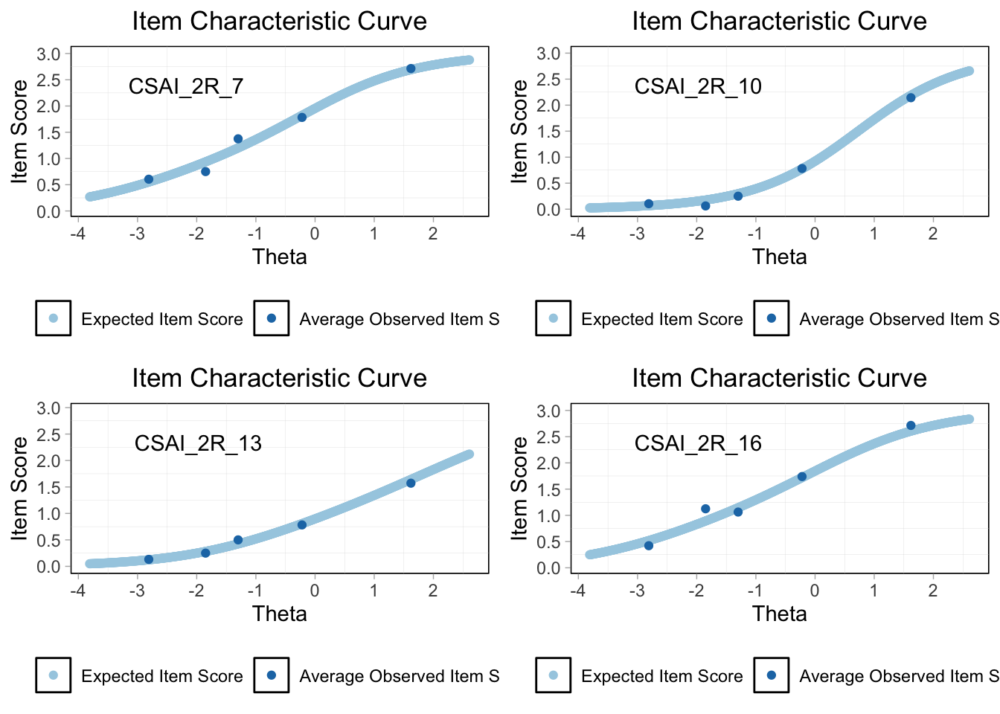
[1] "Please press Zoom on the Plots window to see the plot"Code
ICCplot(
as.data.frame(cognitive_anxiety_CSAI2R_rasch_na_omit),
itemnumber = 5,
itemdescrip = c("CSAI_2R_22"),
method = "cut",
cinumber = 5
)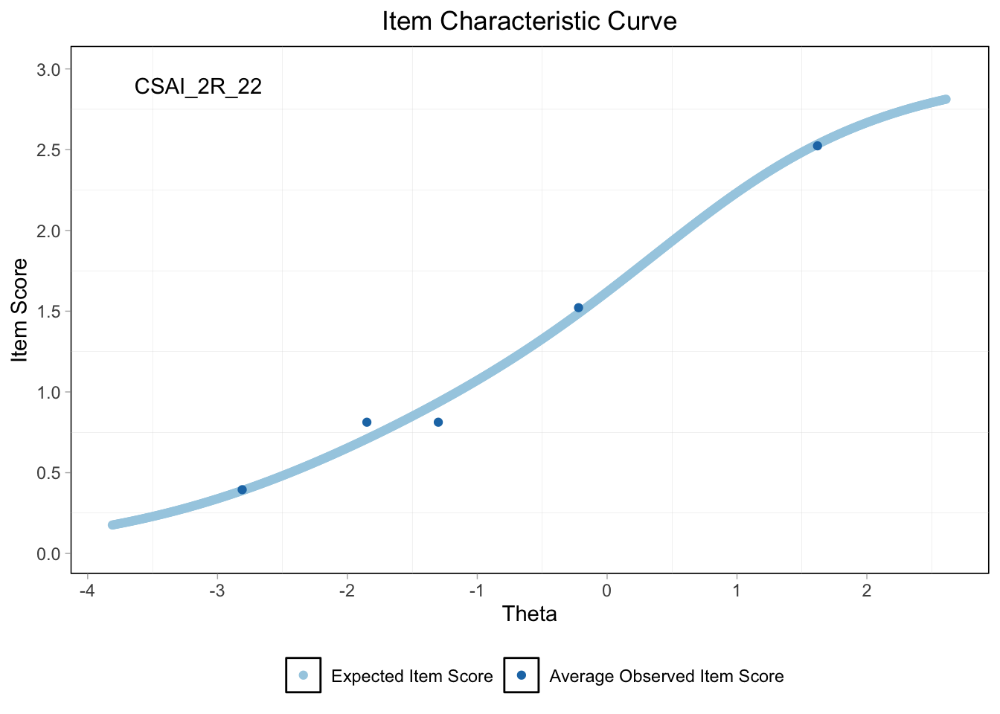
Code
#PCA of residuals (assessing unidimensionality)
RIpcmPCA(cognitive_anxiety_CSAI2R_rasch_na_omit) | Eigenvalues | Proportion of variance |
|---|---|
| 1.47 | 34.1% |
| 1.36 | 25.5% |
| 1.12 | 22.6% |
| 1.02 | 17.2% |
| 0.03 | 0.6% |
Code
#item restscores
RIrestscore(cognitive_anxiety_CSAI2R_rasch_na_omit)| Item | Observed value | Model expected value | Absolute difference | Adjusted p-value (BH) | Statistical significance level | Location | Relative location |
|---|---|---|---|---|---|---|---|
| CSAI_2R_7 | 0.69 | 0.66 | 0.03 | 0.698 | -0.88 | 0.39 | |
| CSAI_2R_10 | 0.71 | 0.74 | 0.03 | 0.698 | 0.67 | 1.94 | |
| CSAI_2R_13 | 0.60 | 0.68 | 0.08 | 0.698 | 1.32 | 2.59 | |
| CSAI_2R_16 | 0.77 | 0.65 | 0.12 | 0.078 | . | -0.72 | 0.55 |
| CSAI_2R_22 | 0.63 | 0.66 | 0.03 | 0.698 | -0.38 | 0.89 |
Code
#loadings on the first residual contrast (assessing clusters in data or multidimensionality)
RIloadLoc(cognitive_anxiety_CSAI2R_rasch_na_omit)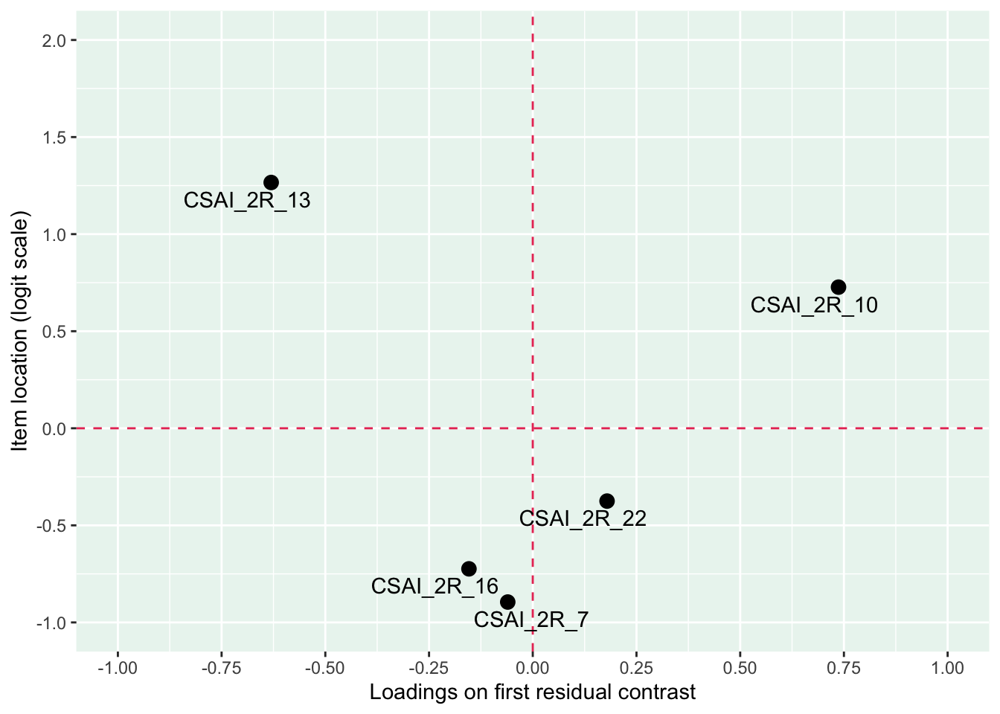
Code
#residual correlations
resid_cor_cognitive_anxiety <- RIgetResidCor(cognitive_anxiety_CSAI2R_rasch_na_omit,
iterations = 800,
cpu = 10)
RIresidcorr(cognitive_anxiety_CSAI2R_rasch_na_omit, cutoff = resid_cor_cognitive_anxiety$p99)| CSAI_2R_7 | CSAI_2R_10 | CSAI_2R_13 | CSAI_2R_16 | CSAI_2R_22 | |
|---|---|---|---|---|---|
| CSAI_2R_7 | |||||
| CSAI_2R_10 | -0.13 | ||||
| CSAI_2R_13 | -0.13 | -0.47 | |||
| CSAI_2R_16 | -0.19 | -0.23 | -0.04 | ||
| CSAI_2R_22 | -0.4 | -0.11 | -0.27 | -0.2 | |
| Note: | |||||
|
Relative cut-off value is 0.094, which is 0.312 above the average correlation (-0.217). Correlations above the cut-off are highlighted in red text. |
Code
#partial gamma coefficients (assessing local independence)
clean_names <- janitor::clean_names
filter <- dplyr::filter
RIpartgamLD(cognitive_anxiety_CSAI2R_rasch_na_omit) #shows only significant results[1] "No statistically significant local dependency found."Code
partgam_LD(as.data.frame(cognitive_anxiety_CSAI2R_rasch_na_omit)) #shows all output, also non-significant results Item1 Item2 gamma se pvalue padj.BH sig lower upper
1 CSAI_2R_7 CSAI_2R_10 0.1077 0.2499 0.6665 1 -0.3821 0.5975
2 CSAI_2R_7 CSAI_2R_13 -0.1071 0.2466 0.6639 1 -0.5905 0.3762
3 CSAI_2R_7 CSAI_2R_16 0.1966 0.2132 0.3565 1 -0.2213 0.6144
4 CSAI_2R_7 CSAI_2R_22 -0.1100 0.2180 0.6139 1 -0.5373 0.3173
5 CSAI_2R_10 CSAI_2R_13 -0.2778 0.2939 0.3446 1 -0.8538 0.2982
6 CSAI_2R_10 CSAI_2R_16 -0.4000 0.2790 0.1517 1 -0.9468 0.1468
7 CSAI_2R_10 CSAI_2R_22 0.1061 0.2337 0.6499 1 -0.3520 0.5641
8 CSAI_2R_13 CSAI_2R_16 0.0217 0.2781 0.9377 1 -0.5233 0.5667
9 CSAI_2R_13 CSAI_2R_22 -0.2805 0.2218 0.2060 1 -0.7152 0.1542
10 CSAI_2R_16 CSAI_2R_22 0.2466 0.2082 0.2363 1 -0.1615 0.6548
Item1 Item2 gamma se pvalue padj.BH sig lower upper
1 CSAI_2R_10 CSAI_2R_7 -0.0469 0.2479 0.8500 1.0000 -0.5327 0.4389
2 CSAI_2R_13 CSAI_2R_7 -0.0820 0.2376 0.7301 1.0000 -0.5476 0.3837
3 CSAI_2R_13 CSAI_2R_10 -0.5315 0.2215 0.0164 0.3285 -0.9657 -0.0973
4 CSAI_2R_16 CSAI_2R_7 0.3814 0.1986 0.0548 1.0000 -0.0079 0.7706
5 CSAI_2R_16 CSAI_2R_10 -0.0638 0.3073 0.8354 1.0000 -0.6660 0.5384
6 CSAI_2R_16 CSAI_2R_13 0.3517 0.2545 0.1670 1.0000 -0.1471 0.8506
7 CSAI_2R_22 CSAI_2R_7 -0.2803 0.2024 0.1661 1.0000 -0.6771 0.1164
8 CSAI_2R_22 CSAI_2R_10 0.4667 0.1934 0.0158 0.3165 0.0876 0.8457
9 CSAI_2R_22 CSAI_2R_13 -0.2099 0.2480 0.3974 1.0000 -0.6960 0.2762
10 CSAI_2R_22 CSAI_2R_16 -0.0539 0.2126 0.7997 1.0000 -0.4706 0.3627Code
#targeting
RItargeting(cognitive_anxiety_CSAI2R_rasch_na_omit)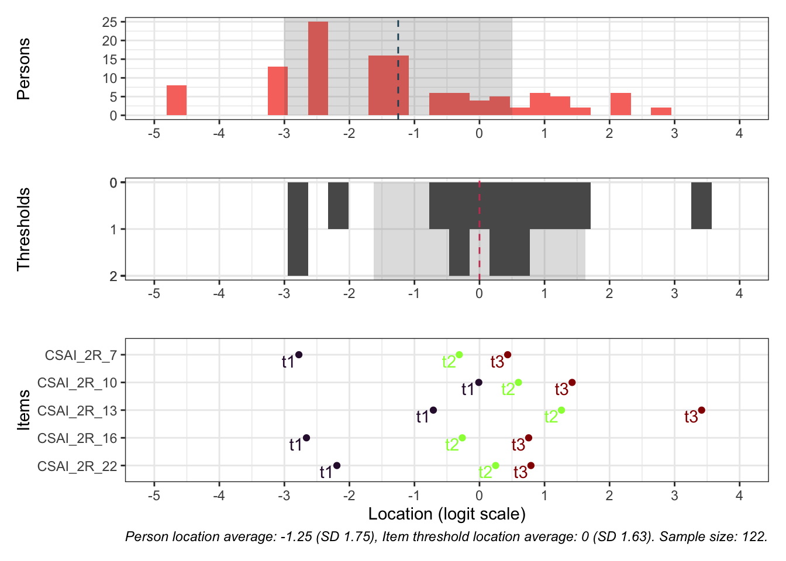
Code
#item hierarchy
itemlabels <- data.frame(itemnr = names(cognitive_anxiety_CSAI2R_rasch_na_omit),
item = NA)
RIitemHierarchy(cognitive_anxiety_CSAI2R_rasch_na_omit)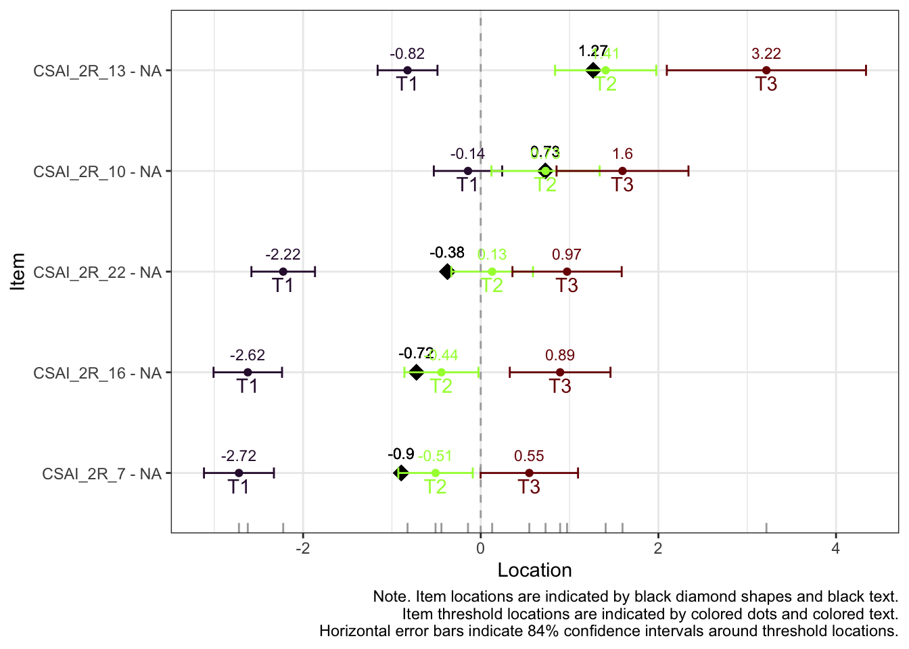
Code
#threshold locations
RIitemparams(cognitive_anxiety_CSAI2R_rasch_na_omit)| Threshold 1 | Threshold 2 | Threshold 3 | Item location | |
|---|---|---|---|---|
| CSAI_2R_7 | -2.78 | -0.31 | 0.43 | -0.88 |
| CSAI_2R_10 | -0.01 | 0.60 | 1.42 | 0.67 |
| CSAI_2R_13 | -0.71 | 1.26 | 3.42 | 1.32 |
| CSAI_2R_16 | -2.66 | -0.26 | 0.76 | -0.72 |
| CSAI_2R_22 | -2.19 | 0.25 | 0.79 | -0.38 |
| Note: | ||||
| Item location is the average of the thresholds for each item. |
Code
#analysis of response categories
RIitemCats(
cognitive_anxiety_CSAI2R_rasch_na_omit,
items = "all",
xlims = c(-5, 5),
legend = "left"
)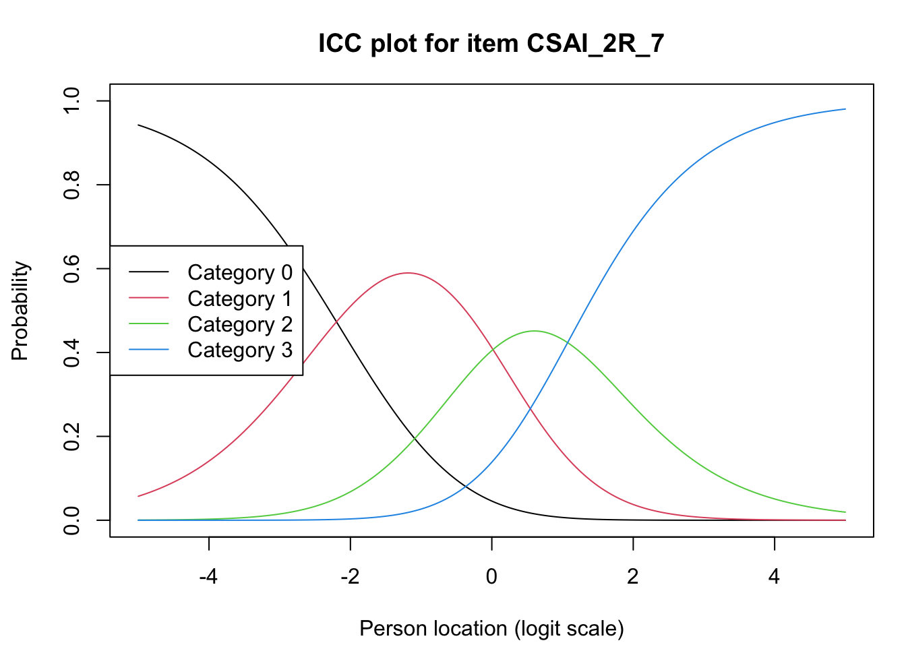
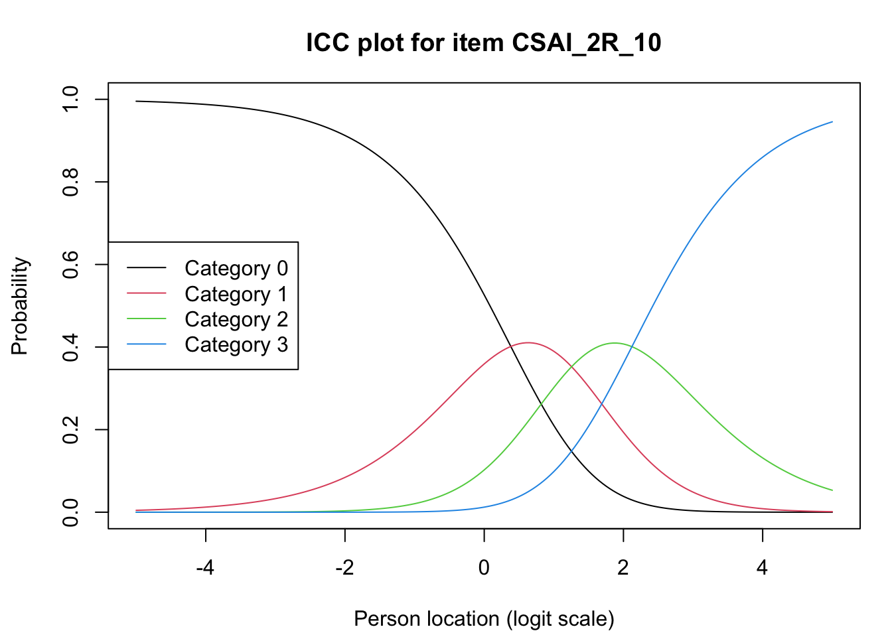
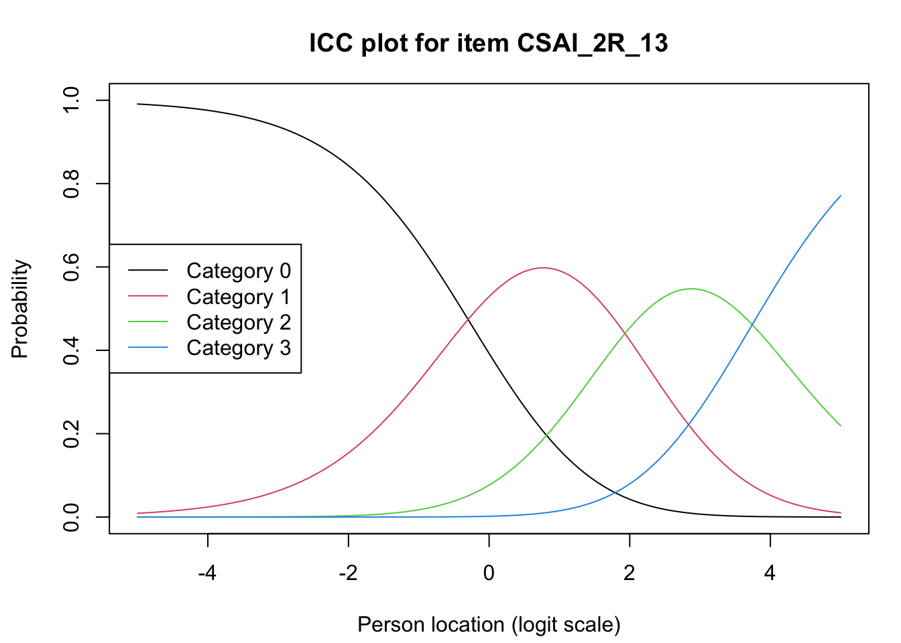
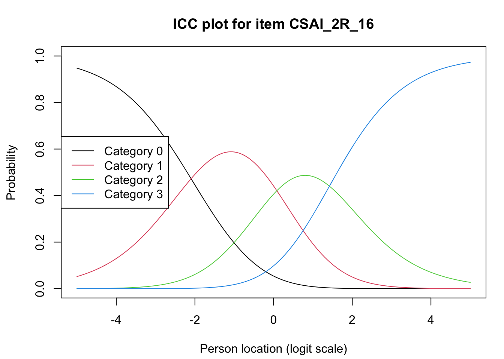
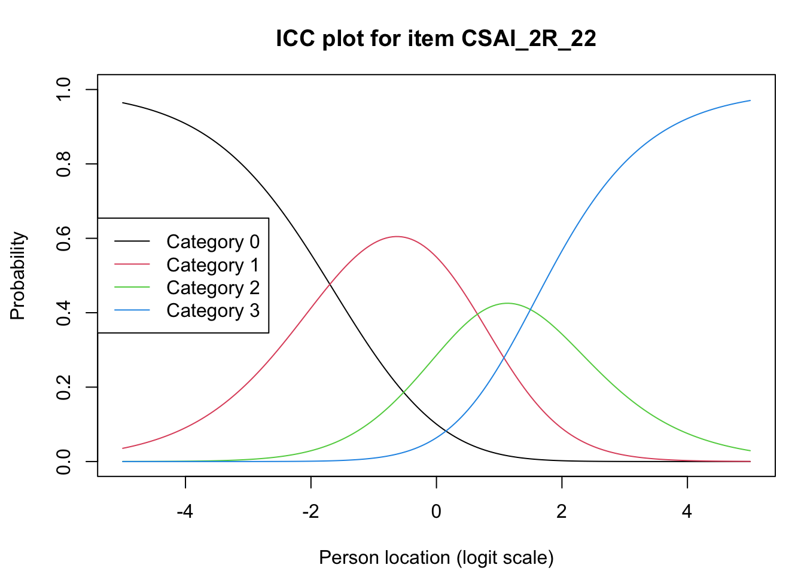
Code
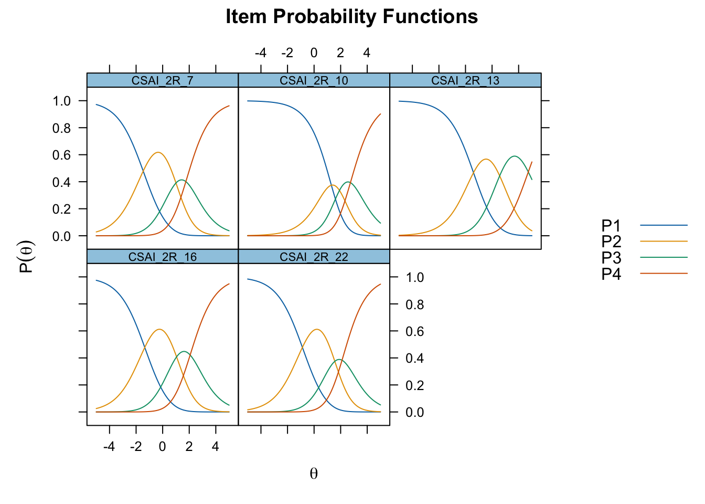
Code
#note: response categories have been analyzed using RIitemCats() function (in the easyRasch package) that estimates ICC plots using the eRm package. When there are response categories with fewer than 3 responses the easyRasch package uses estimation from the mirt package instead in the RIitemparams() and RItargeting() functions, and explain potential slight variations found in those outputs compared to the RIitemCats output. For transparency, ICC plots from the mirt package are therefore also displayed. Response category analysis was however consequently conducted using the RIitemCats() function that uses estimation from the eRm package. 

No disordered item thresholds, thus no recoding of scale steps needed. Poor reliability was demonstrated in the TIF analysis. Item 16 was overfit to the model which indicates that it is redundant (see conditional item fit investigation) and will therefore be removed in a subsequent Rasch re-analysis.
7.4 Re-analysis of cognitive_anxiety_CSAI2R trimmed version
Item 16 was removed in a subsequent trimmed version of the cognitive anxiety subscale in CSAI-2R. The trimmed version therefore consists of items 7, 10, 13, 22.
Code
#removing missing values
#in practice this means removing participants from the intervention study (Hockeystudien) that did not complete CSAI-2R
cognitive_anxiety_CSAI2R_rasch_trimmed_na_omit <- cognitive_anxiety_CSAI2R_rasch_trimmed %>%
select(CSAI_2R_7, CSAI_2R_10, CSAI_2R_13, CSAI_2R_22) %>%
na.omit()
RImissing(cognitive_anxiety_CSAI2R_rasch_trimmed_na_omit)[1] "No missing data."Code
#tile plot (response category frequency for the items)
RItileplot(cognitive_anxiety_CSAI2R_rasch_trimmed_na_omit)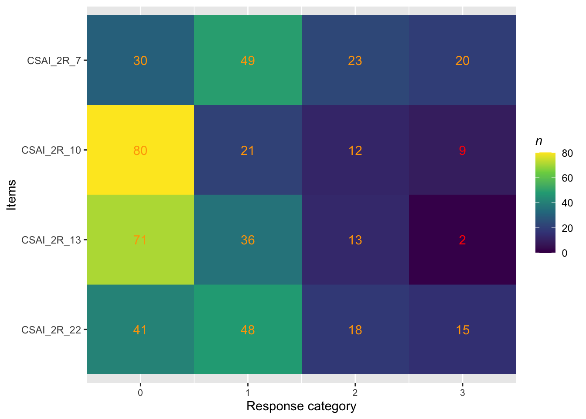
Code
#conditional likelihood ratio tests (CLR)
#a test of homogeneity that assesses whether item parameters are homogeneous across all levels of theta
clr_tests(cognitive_anxiety_CSAI2R_rasch_trimmed_na_omit, model = "PCM")
Conditional Likelihood Ratio Tests: clr df pvalue sig
overall 7.85 11 0.73 Code
#re-analysis of conditional item fit (assessing unidimensionaliity)
simfit1_cognitive_anxiety_trimmed <- RIgetfit(
cognitive_anxiety_CSAI2R_rasch_trimmed_na_omit,
iterations = 100,
cpu = 10
)
RIitemfit(
cognitive_anxiety_CSAI2R_rasch_trimmed_na_omit,
simfit1_cognitive_anxiety_trimmed,
cutoff = c(0.005, 0.995)
) | Item | InfitMSQ | Infit thresholds | OutfitMSQ | Outfit thresholds | Infit diff | Outfit diff | Relative location |
|---|---|---|---|---|---|---|---|
| CSAI_2R_7 | 0.855 | [0.565, 1.4] | 0.848 | [0.491, 1.625] | no misfit | no misfit | 0.30 |
| CSAI_2R_10 | 1.045 | [0.724, 1.323] | 1.059 | [0.684, 1.415] | no misfit | no misfit | 1.71 |
| CSAI_2R_13 | 1.183 | [0.792, 1.289] | 1.191 | [0.734, 1.286] | no misfit | no misfit | 2.35 |
| CSAI_2R_22 | 0.956 | [0.785, 1.307] | 0.932 | [0.753, 1.506] | no misfit | no misfit | 0.76 |
| Note: | |||||||
|
MSQ values based on conditional calculations (n = 122 complete cases). Simulation based thresholds from 100 simulated datasets. |
Code
#re-analysis of conditional item characteristic curves
ICCplot(
as.data.frame(cognitive_anxiety_CSAI2R_rasch_trimmed_na_omit),
itemnumber = 1:4,
itemdescrip = c("CSAI_2R_7",
"CSAI_2R_10",
"CSAI_2R_13",
"CSAI_2R_22"),
method = "cut"
)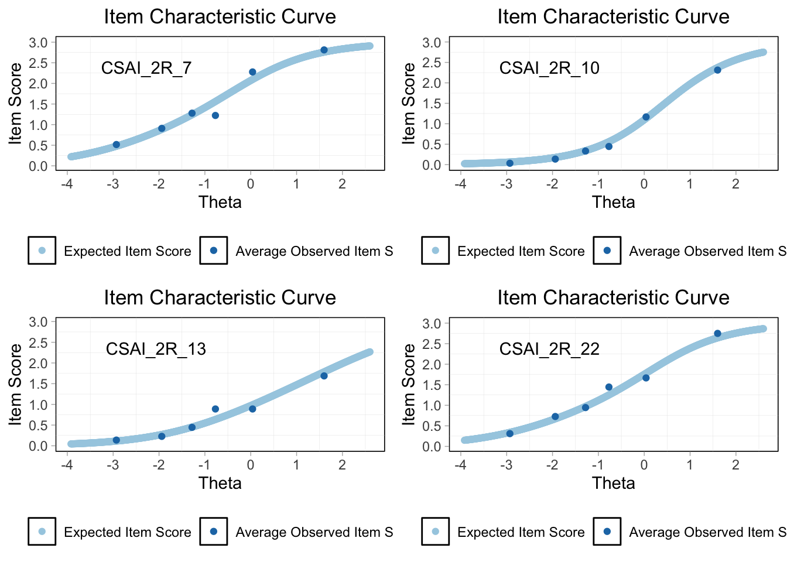
[1] "Please press Zoom on the Plots window to see the plot"Code
#re-analyzing PCA of residuals (assessing unidimensionality)
RIpcmPCA(cognitive_anxiety_CSAI2R_rasch_trimmed_na_omit)| Eigenvalues | Proportion of variance |
|---|---|
| 1.59 | 41.1% |
| 1.34 | 32.6% |
| 1.05 | 25.7% |
| 0.03 | 0.6% |
Code
#re-analysis of item restscores
RIrestscore(cognitive_anxiety_CSAI2R_rasch_trimmed_na_omit)| Item | Observed value | Model expected value | Absolute difference | Adjusted p-value (BH) | Statistical significance level | Location | Relative location |
|---|---|---|---|---|---|---|---|
| CSAI_2R_7 | 0.65 | 0.60 | 0.05 | 0.853 | -0.98 | 0.30 | |
| CSAI_2R_10 | 0.71 | 0.70 | 0.01 | 0.871 | 0.43 | 1.71 | |
| CSAI_2R_13 | 0.56 | 0.64 | 0.08 | 0.853 | 1.07 | 2.35 | |
| CSAI_2R_22 | 0.62 | 0.61 | 0.01 | 0.871 | -0.52 | 0.76 |
Code
#re-analysis of loadings on the first residual contrast (assessing clusters in data or multidimensionality)
RIloadLoc(cognitive_anxiety_CSAI2R_rasch_trimmed_na_omit)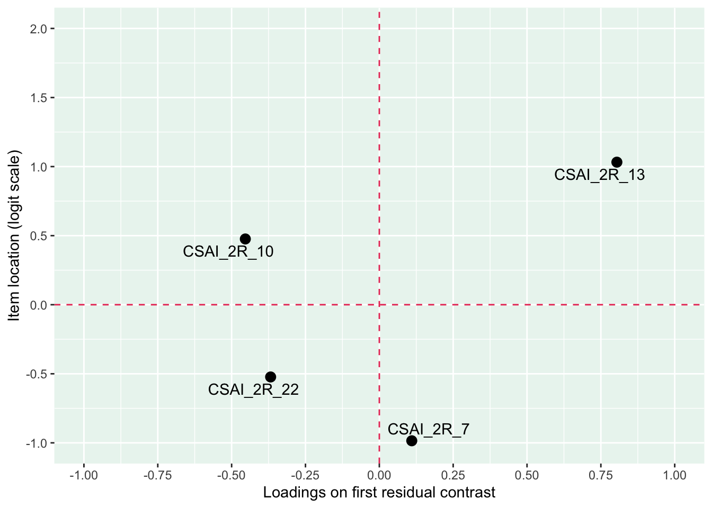
Code
#re-analysis of residual correlations
resid_cor_cognitive_anxiety_trimmed <- RIgetResidCor(
cognitive_anxiety_CSAI2R_rasch_trimmed_na_omit,
iterations = 800,
cpu = 10
)
RIresidcorr(cognitive_anxiety_CSAI2R_rasch_trimmed_na_omit, cutoff = resid_cor_cognitive_anxiety_trimmed$p99)| CSAI_2R_7 | CSAI_2R_10 | CSAI_2R_13 | CSAI_2R_22 | |
|---|---|---|---|---|
| CSAI_2R_7 | ||||
| CSAI_2R_10 | -0.18 | |||
| CSAI_2R_13 | -0.13 | -0.48 | ||
| CSAI_2R_22 | -0.43 | -0.15 | -0.26 | |
| Note: | ||||
|
Relative cut-off value is 0.023, which is 0.294 above the average correlation (-0.271). Correlations above the cut-off are highlighted in red text. |
Code
#re-analysis of partial gamma coefficients (assessing local independence)
RIpartgamLD(cognitive_anxiety_CSAI2R_rasch_trimmed_na_omit) #shows only significant results[1] "No statistically significant local dependency found."Code
partgam_LD(as.data.frame(cognitive_anxiety_CSAI2R_rasch_trimmed_na_omit)) #shows all output, also non-significant results Item1 Item2 gamma se pvalue padj.BH sig lower upper
1 CSAI_2R_7 CSAI_2R_10 0.0748 0.2842 0.7923 1 -0.4822 0.6318
2 CSAI_2R_7 CSAI_2R_13 0.3122 0.2140 0.1446 1 -0.1072 0.7317
3 CSAI_2R_7 CSAI_2R_22 0.0968 0.2387 0.6851 1 -0.3710 0.5645
4 CSAI_2R_10 CSAI_2R_13 -0.4455 0.2787 0.1099 1 -0.9918 0.1008
5 CSAI_2R_10 CSAI_2R_22 0.0787 0.2389 0.7420 1 -0.3896 0.5469
6 CSAI_2R_13 CSAI_2R_22 -0.1439 0.2217 0.5162 1 -0.5785 0.2906
Item1 Item2 gamma se pvalue padj.BH sig lower upper
1 CSAI_2R_10 CSAI_2R_7 -0.0128 0.2354 0.9566 1.0000 -0.4742 0.4486
2 CSAI_2R_13 CSAI_2R_7 0.0759 0.2117 0.7200 1.0000 -0.3390 0.4907
3 CSAI_2R_13 CSAI_2R_10 -0.5328 0.2225 0.0166 0.1993 -0.9689 -0.0968
4 CSAI_2R_22 CSAI_2R_7 -0.0871 0.2243 0.6978 1.0000 -0.5267 0.3525
5 CSAI_2R_22 CSAI_2R_10 0.4225 0.2112 0.0454 0.5449 0.0086 0.8364
6 CSAI_2R_22 CSAI_2R_13 -0.0945 0.2343 0.6866 1.0000 -0.5537 0.3646Code
#re-analysis of targeting
RItargeting(cognitive_anxiety_CSAI2R_rasch_trimmed_na_omit)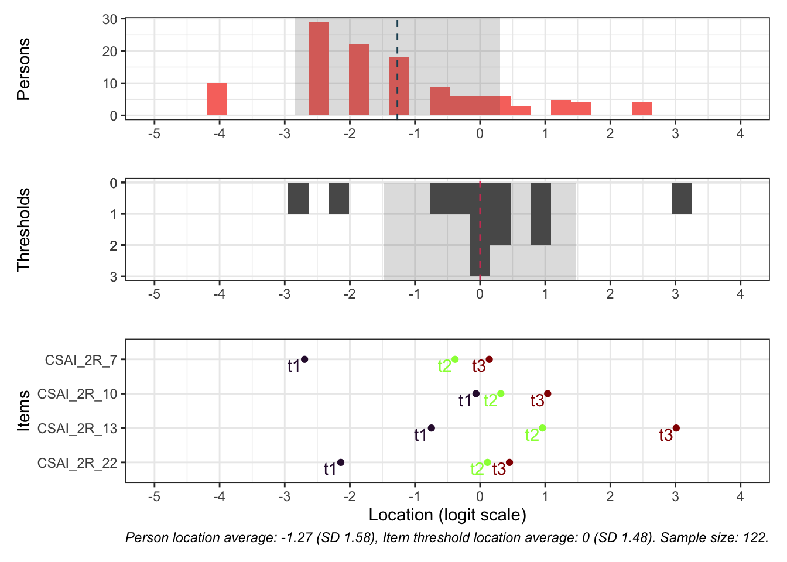
Code
#re-analysis of item hierarchy
itemlabels <- data.frame(
itemnr = names(cognitive_anxiety_CSAI2R_rasch_trimmed_na_omit),
item = NA
)
RIitemHierarchy(cognitive_anxiety_CSAI2R_rasch_trimmed_na_omit)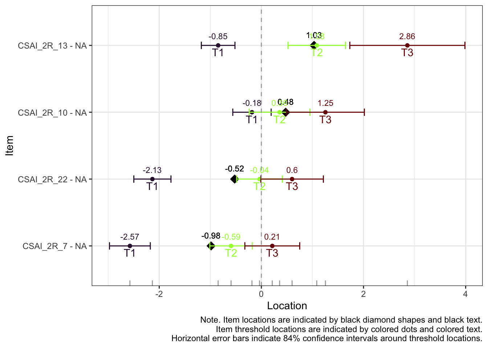
Code
#threshold locations
RIitemparams(cognitive_anxiety_CSAI2R_rasch_trimmed_na_omit)| Threshold 1 | Threshold 2 | Threshold 3 | Item location | |
|---|---|---|---|---|
| CSAI_2R_7 | -2.70 | -0.38 | 0.14 | -0.98 |
| CSAI_2R_10 | -0.06 | 0.32 | 1.04 | 0.43 |
| CSAI_2R_13 | -0.75 | 0.96 | 3.01 | 1.07 |
| CSAI_2R_22 | -2.14 | 0.11 | 0.45 | -0.52 |
| Note: | ||||
| Item location is the average of the thresholds for each item. |
Code
#re-analysis of response categories using cognitive_anxiety_CSAI2R trimmed version
RIitemCats(
cognitive_anxiety_CSAI2R_rasch_trimmed_na_omit,
items = "all",
xlims = c(-5, 5),
legend = "left"
)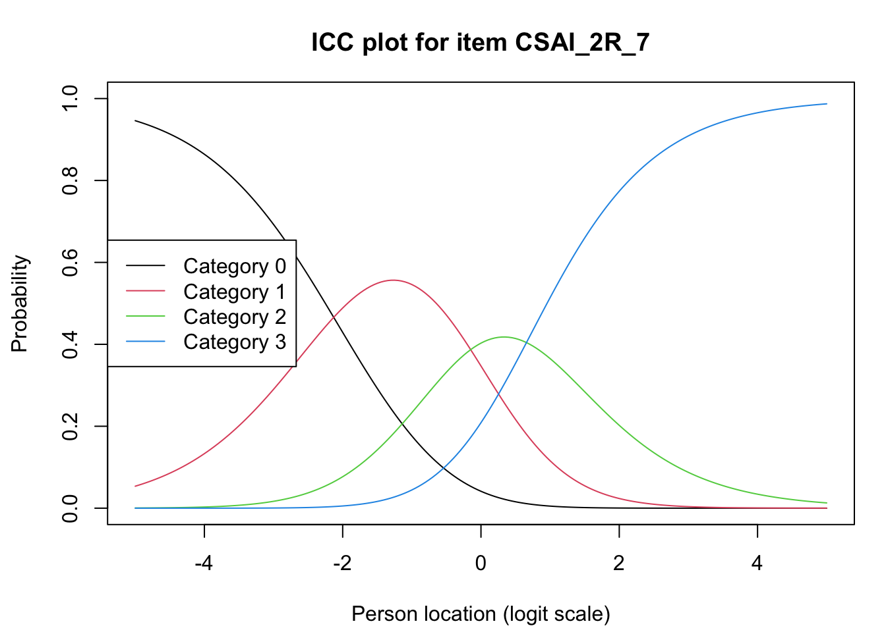
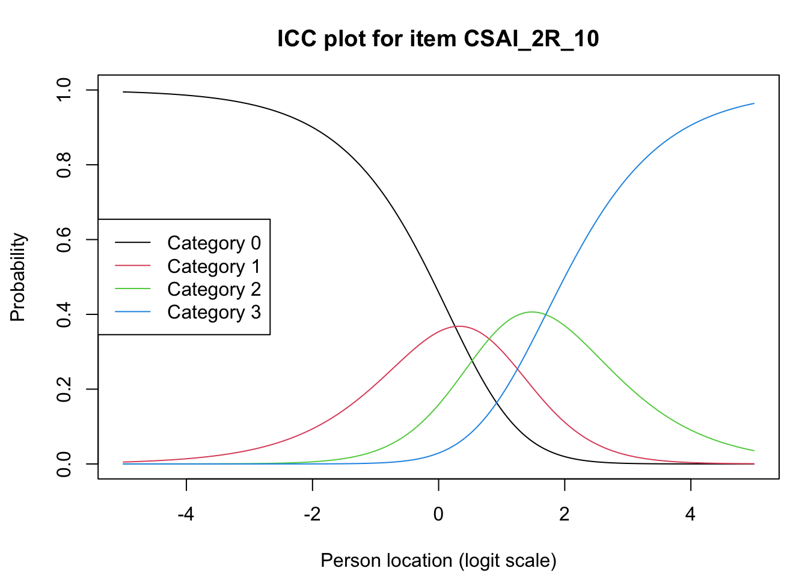
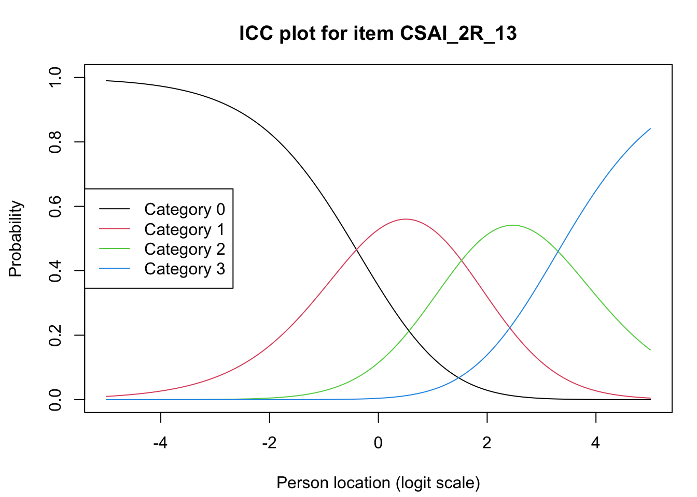
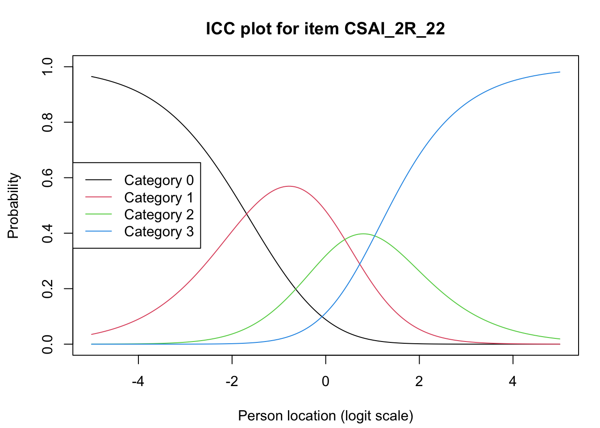
Code
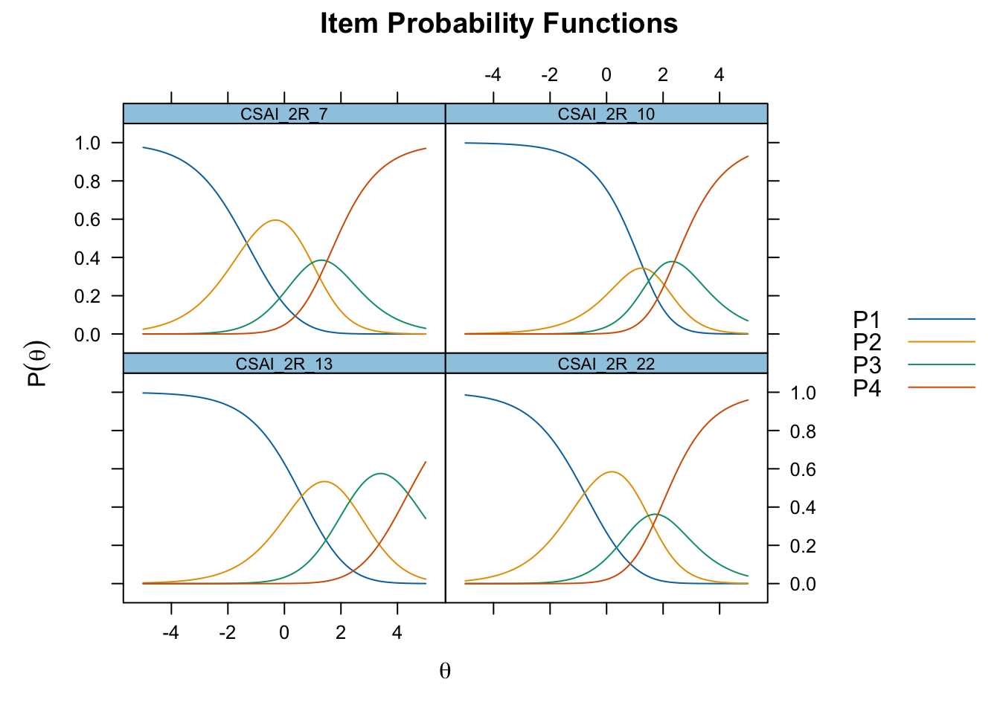
Code
#note: response categories have been analyzed using RIitemCats() function (in the easyRasch package) that estimates ICC plots using the eRm package. When there are response categories with fewer than 3 responses the easyRasch package uses estimation from the mirt package instead in the RIitemparams() and RItargeting() functions, and explain potential slight variations found in those outputs compared to the RIitemCats output. For transparency, ICC plots from the mirt package are therefore also displayed. Response category analysis was however consequently conducted using the RIitemCats() function that uses estimation from the eRm package. Code
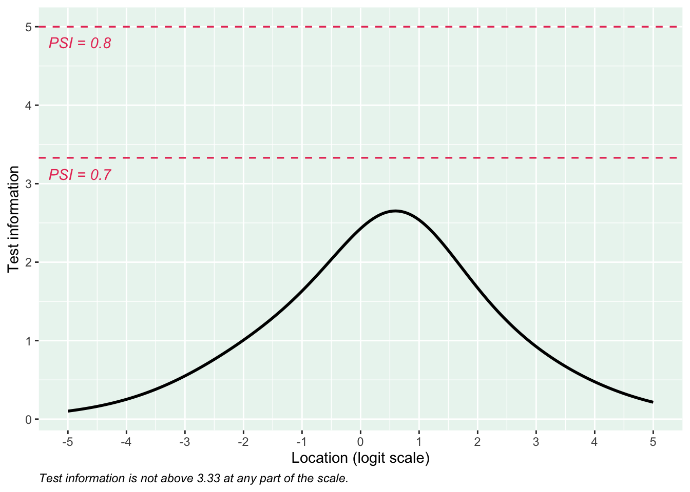
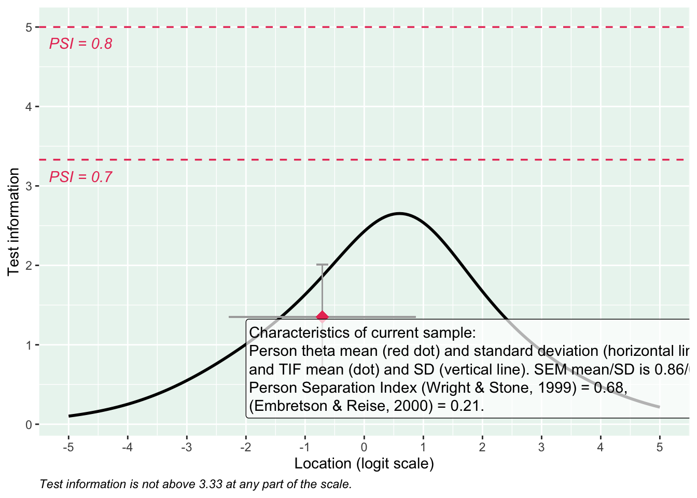
No further item misfit after removing item 16. Still no disordered item thresholds. Still poor reliability in the TIF analysis. This trimmed version of the cognitive anxiety sub-scale will be used in the validity analysis.
7.5 Cognitive anxiety (CSAI-2R) and BEA validity analysis
Validity between cognitive_anxiety_CSAI2R and BEA is investigated by correlation analysis. As both scales has undergone Rasch analysis, participants theta estimates (computed with weighted likelihood estimation - WLE) will be correlated, and since thetas are interval data, Pearson’s correlation is applied.
Code
#complete cases data frame for validity analyses
#removing missing values in relevant items for complete cases analysis
#only BE items and one item from the other scales in the bulls eye study
#is needed (in this case the SubjektivPrestation item)
#this is because there are no missing values for the other scales
#after the intervention study (Hockeystudien) participants have been removed
#therefore this data frame will work for all validity analyses
items_validity_analyses <- c(
"BE_Competition_recoded",
"BE_Training_recoded",
"BE_PreparationRecovery",
"BE_Life",
"SubjektivPrestation"
)
data_complete_cases <- bulls_eye_merged_superfinal_data[complete.cases(bulls_eye_merged_superfinal_data[, items_validity_analyses]), ]
#155 participants to begin with
#33 participants from the intervention study (Hockeystudien) were removed (did not complete any scale beside Bulls Eye)
#1 participant (not from the intervention study) who completed the other scales but not the dartboard in Bulls Eye (only other parts of BE) and were therefore removed
#results in a complete cases data frame with 121 participants
nrow(data_complete_cases)[1] 121Code
#item data frames
BE_validity_analyses <- data_complete_cases[, c(
"BE_Competition_recoded",
"BE_Training_recoded",
"BE_PreparationRecovery",
"BE_Life"
)]
cognitive_anxiety_CSAI2R_validity_analyses <- data_complete_cases[, c(
"CSAI_2R_7",
"CSAI_2R_10",
"CSAI_2R_13",
"CSAI_2R_22"
)]
#extracting thetas
BE_thetas <- RIestThetas(BE_validity_analyses)
cognitive_anxiety_CSAI2R_thetas <- RIestThetas(cognitive_anxiety_CSAI2R_validity_analyses)
#adding thetas to the data frame
data_complete_cases$BE_thetas_WLE <- BE_thetas$WLE
data_complete_cases$cognitive_anxiety_CSAI2R_thetas_WLE <- cognitive_anxiety_CSAI2R_thetas$WLECode
correlation_BE_cognitive_anxiety_CSAI2R <- cor_test(
data_complete_cases,
x = "BE_thetas_WLE",
y = "cognitive_anxiety_CSAI2R_thetas_WLE",
method = "pearson"
)
print(correlation_BE_cognitive_anxiety_CSAI2R)Parameter1 | Parameter2 | r | 95% CI
----------------------------------------------------------------------------
BE_thetas_WLE | cognitive_anxiety_CSAI2R_thetas_WLE | -0.25 | [-0.41, -0.07]
Parameter1 | t(119) | p
--------------------------------
BE_thetas_WLE | -2.80 | 0.006**
Observations: 121Code
plot(correlation_BE_cognitive_anxiety_CSAI2R)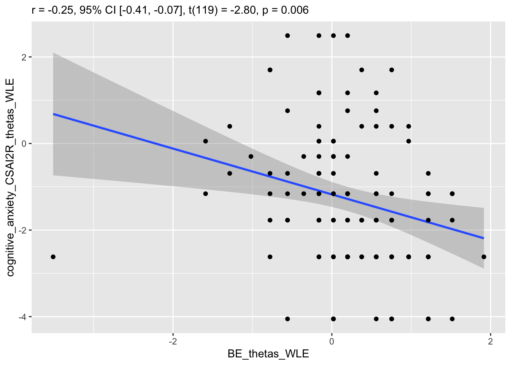
Some participants did not complete BEA and CSAI-2R during the same day as intended. Therefore, a sensitivity analysis is conducted.
Code
#creating data frame with only participants that completed Bulls Eye and the other scales during the same day
#since 17 participants did not (has already been checked in a prior validity analysis), 104 participants will remain in the sensitivity analysis
data_complete_cases_less_than_1day <- subset(data_complete_cases, time_latency_survey1_bulls_eye1_days < 1)Code
#looking only at participants who completed Bulls Eye and the other scales during the same day (N = 104)
#sensitivity analysis cognitive_anxiety_CSAI2R and BE
BE_validity_analyses_less1day <- data_complete_cases_less_than_1day[, c(
"BE_Competition_recoded",
"BE_Training_recoded",
"BE_PreparationRecovery",
"BE_Life"
)]
cognitive_anxiety_CSAI2R_validity_analyses_less1day <- data_complete_cases_less_than_1day[, c(
"CSAI_2R_7",
"CSAI_2R_10",
"CSAI_2R_13",
"CSAI_2R_22"
)]
#extracting thetas
BE_thetas_less1day <- RIestThetas(BE_validity_analyses_less1day)
cognitive_anxiety_CSAI2R_thetas_less1day <- RIestThetas(cognitive_anxiety_CSAI2R_validity_analyses_less1day)
#adding thetas to the data frame
data_complete_cases_less_than_1day$BE_thetas_less1day_WLE <- BE_thetas_less1day$WLE
data_complete_cases_less_than_1day$cognitive_anxiety_CSAI2R_thetas_less1day_WLE <- cognitive_anxiety_CSAI2R_thetas_less1day$WLE
#analysis only with participants completing Bulls Eye and CSAI-2R the same day
correlation_BE_cognitive_anxiety_CSAI2R_less1day <- cor_test(
data_complete_cases_less_than_1day,
x = "BE_thetas_less1day_WLE",
y = "cognitive_anxiety_CSAI2R_thetas_less1day_WLE",
method = "pearson"
)
print(correlation_BE_cognitive_anxiety_CSAI2R_less1day)Parameter1 | Parameter2 | r
-----------------------------------------------------------------------------
BE_thetas_less1day_WLE | cognitive_anxiety_CSAI2R_thetas_less1day_WLE | -0.25
Parameter1 | 95% CI | t(102) | p
---------------------------------------------------------
BE_thetas_less1day_WLE | [-0.42, -0.06] | -2.62 | 0.010*
Observations: 104Code
#we can also check if there is a statistically significant difference
#by adding same or different day as a predictor
data_complete_cases_sensitivity_analysis <- data_complete_cases %>%
mutate(group = factor(ifelse(time_latency_survey1_bulls_eye1_days < 1,"same_day","different_day")))
m0_cognitive_anxiety_CSAI2R <- lm(cognitive_anxiety_CSAI2R_thetas_WLE ~ BE_thetas_WLE, data = data_complete_cases_sensitivity_analysis)
m1_cognitive_anxiety_CSAI2R <- lm(cognitive_anxiety_CSAI2R_thetas_WLE ~ BE_thetas_WLE + group, data = data_complete_cases_sensitivity_analysis)
anova(m0_cognitive_anxiety_CSAI2R, m1_cognitive_anxiety_CSAI2R)Analysis of Variance Table
Model 1: cognitive_anxiety_CSAI2R_thetas_WLE ~ BE_thetas_WLE
Model 2: cognitive_anxiety_CSAI2R_thetas_WLE ~ BE_thetas_WLE + group
Res.Df RSS Df Sum of Sq F Pr(>F)
1 119 286.67
2 118 285.94 1 0.72785 0.3004 0.5847Adding whether BE and cognitive_anxiety_CSAI2R were completed during the same day or not as a predictor did not significantly alter the results.
7.6 Somatic anxiety (CSAI-2R): Rasch analysis and BEA validity investigation
Rasch analysis of Competitive State Anxiety Inventory-2 Revised (CSAI-2R) subscale Somatic anxiety items 5, 8, 11, 17, 20, 23, 26.

Code
#removing missing values
#in practice this means removing participants from the intervention study (Hockeystudien) that did not complete CSAI-2R
somatic_anxiety_CSAI2R_rasch_na_omit <- somatic_anxiety_CSAI2R_rasch %>%
select(CSAI_2R_5, CSAI_2R_8, CSAI_2R_11, CSAI_2R_17, CSAI_2R_20, CSAI_2R_23, CSAI_2R_26) %>%
na.omit()
RImissing(somatic_anxiety_CSAI2R_rasch_na_omit)[1] "No missing data."Code
#tile plot (response category frequency for the items)
RItileplot(somatic_anxiety_CSAI2R_rasch_na_omit)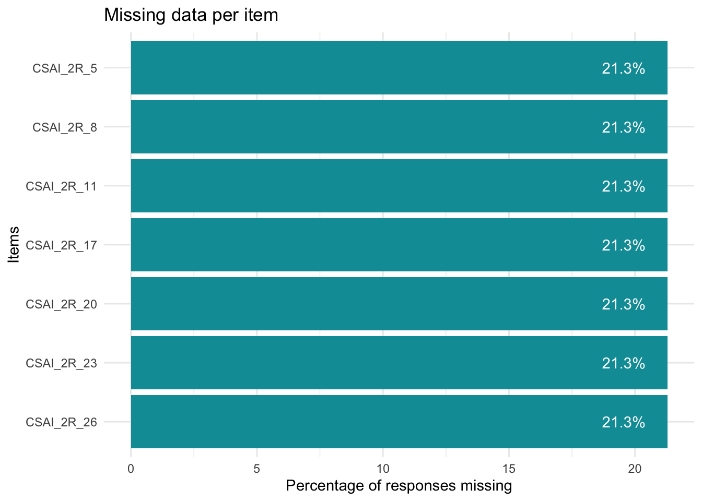
Item 11 have no responses in scale step three, that will therefore be merged with scale step two.
Code
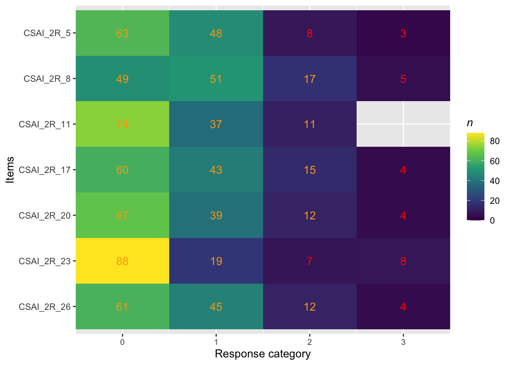
Code
[1] "No missing data."Code
#tile plot
RItileplot(somatic_anxiety_CSAI2R_rasch_na_omit)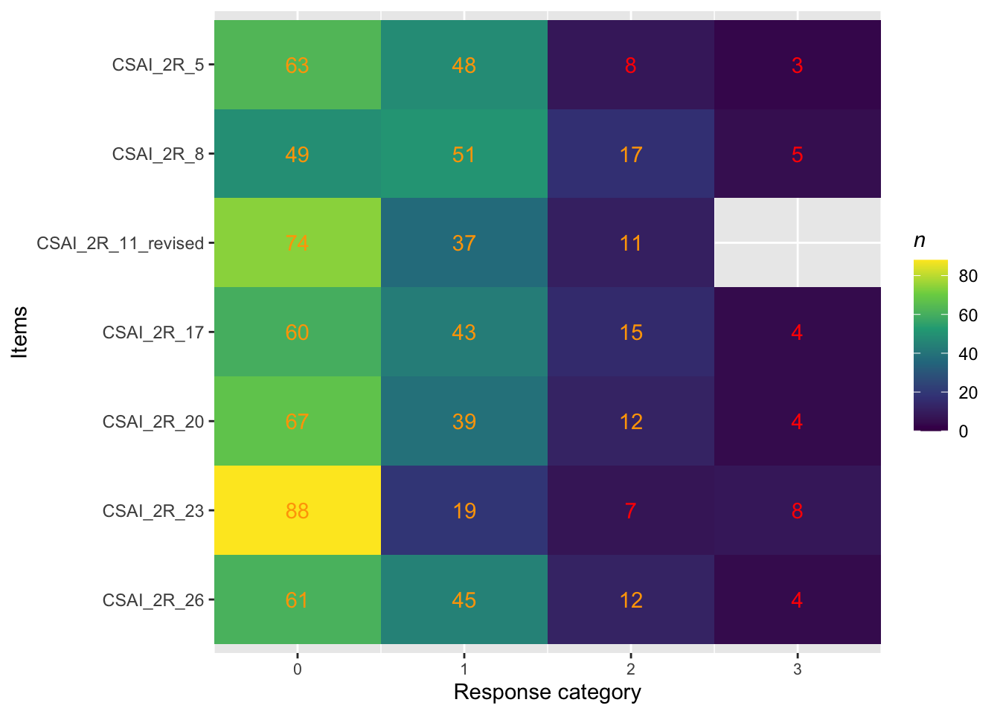
Code
#conditional likelihood ratio tests (CLR)
#a test of homogeneity that assesses whether item parameters are homogeneous across all levels of theta
clr_tests(somatic_anxiety_CSAI2R_rasch_na_omit, model = "PCM")
Conditional Likelihood Ratio Tests: clr df pvalue sig
overall 24.6 19 0.17 Code
| Item | InfitMSQ | Infit thresholds | OutfitMSQ | Outfit thresholds | Infit diff | Outfit diff | Relative location |
|---|---|---|---|---|---|---|---|
| CSAI_2R_5 | 0.91 | [0.783, 1.208] | 0.909 | [0.729, 1.298] | no misfit | no misfit | 1.71 |
| CSAI_2R_8 | 0.898 | [0.76, 1.201] | 0.869 | [0.754, 1.297] | no misfit | no misfit | 1.30 |
| CSAI_2R_11_revised | 0.875 | [0.747, 1.31] | 0.749 | [0.711, 1.437] | no misfit | no misfit | 1.51 |
| CSAI_2R_17 | 0.99 | [0.706, 1.473] | 0.992 | [0.596, 1.611] | no misfit | no misfit | 1.55 |
| CSAI_2R_20 | 0.912 | [0.752, 1.301] | 0.856 | [0.724, 1.32] | no misfit | no misfit | 1.65 |
| CSAI_2R_23 | 1.206 | [0.788, 1.273] | 1.122 | [0.782, 1.342] | no misfit | no misfit | 1.63 |
| CSAI_2R_26 | 1.272 | [0.785, 1.218] | 1.441 | [0.786, 1.227] | 0.054 | 0.214 | 1.57 |
| Note: | |||||||
|
MSQ values based on conditional calculations (n = 122 complete cases). Simulation based thresholds from 100 simulated datasets. |
Code
#conditional item characteristic curves
ICCplot(
as.data.frame(somatic_anxiety_CSAI2R_rasch_na_omit),
itemnumber = 1:4,
itemdescrip = c("CSAI_2R_5", "CSAI_2R_8", "CSAI_2R_11_revised", "CSAI_2R_17"),
method = "cut"
)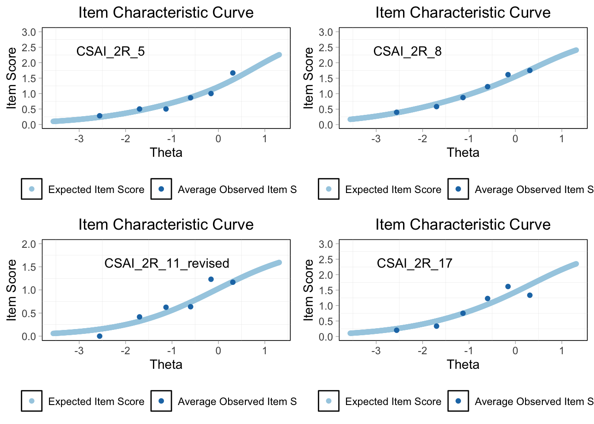
[1] "Please press Zoom on the Plots window to see the plot"Code
ICCplot(
as.data.frame(somatic_anxiety_CSAI2R_rasch_na_omit),
itemnumber = 5:7,
itemdescrip = c("CSAI_2R_20", "CSAI_2R_23", "CSAI_2R_26"),
method = "cut"
)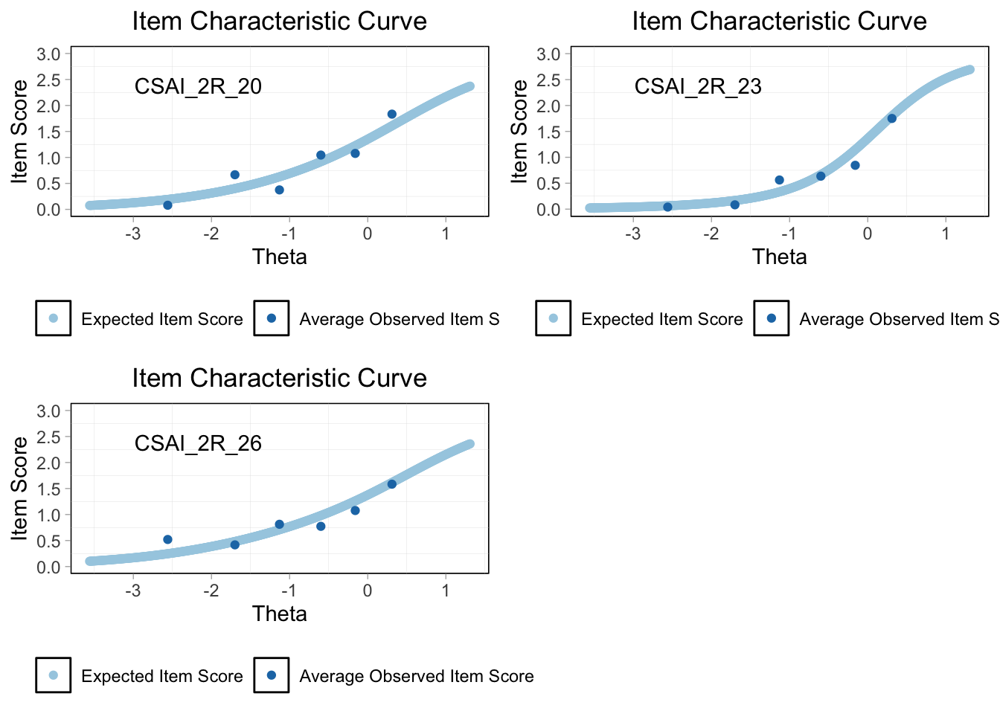
[1] "Please press Zoom on the Plots window to see the plot"Code
#PCA of residuals (assessing unidimensionality)
RIpcmPCA(somatic_anxiety_CSAI2R_rasch_na_omit) | Eigenvalues | Proportion of variance |
|---|---|
| 1.88 | 30.2% |
| 1.48 | 19.2% |
| 1.17 | 16.7% |
| 1.05 | 14.8% |
| 0.76 | 10.8% |
Code
#item restscores
RIrestscore(somatic_anxiety_CSAI2R_rasch_na_omit)| Item | Observed value | Model expected value | Absolute difference | Adjusted p-value (BH) | Statistical significance level | Location | Relative location |
|---|---|---|---|---|---|---|---|
| CSAI_2R_5 | 0.62 | 0.59 | 0.03 | 0.761 | 0.15 | 1.71 | |
| CSAI_2R_8 | 0.68 | 0.61 | 0.07 | 0.604 | -0.26 | 1.30 | |
| CSAI_2R_11_revised | 0.68 | 0.57 | 0.11 | 0.302 | -0.06 | 1.51 | |
| CSAI_2R_17 | 0.63 | 0.60 | 0.03 | 0.685 | -0.01 | 1.55 | |
| CSAI_2R_20 | 0.65 | 0.59 | 0.06 | 0.604 | 0.09 | 1.65 | |
| CSAI_2R_23 | 0.54 | 0.58 | 0.04 | 0.685 | 0.07 | 1.63 | |
| CSAI_2R_26 | 0.40 | 0.60 | 0.20 | 0.116 | 0.01 | 1.57 |
Code
#loadings on the first residual contrast (assessing clusters in data or multidimensionality)
RIloadLoc(somatic_anxiety_CSAI2R_rasch_na_omit)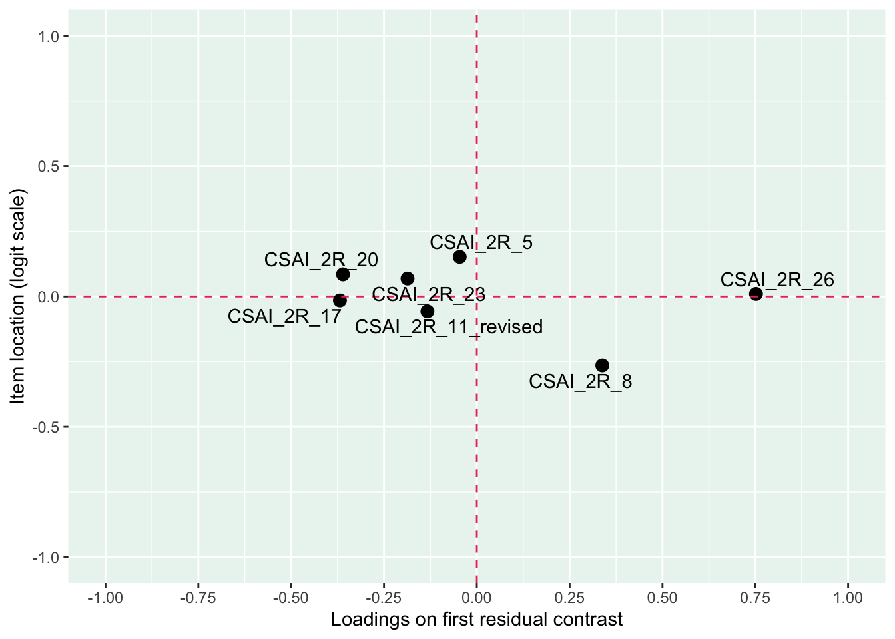
Code
#residual correlations
resid_cor_somatic_anxiety <- RIgetResidCor(somatic_anxiety_CSAI2R_rasch_na_omit,
iterations = 800,
cpu = 10)
RIresidcorr(somatic_anxiety_CSAI2R_rasch_na_omit, cutoff = resid_cor_somatic_anxiety$p99) | CSAI_2R_5 | CSAI_2R_8 | CSAI_2R_11_revised | CSAI_2R_17 | CSAI_2R_20 | CSAI_2R_23 | CSAI_2R_26 | |
|---|---|---|---|---|---|---|---|
| CSAI_2R_5 | |||||||
| CSAI_2R_8 | 0.05 | ||||||
| CSAI_2R_11_revised | -0.06 | -0.07 | |||||
| CSAI_2R_17 | -0.19 | -0.18 | -0.03 | ||||
| CSAI_2R_20 | -0.16 | -0.37 | 0.22 | 0.05 | |||
| CSAI_2R_23 | -0.16 | -0.34 | -0.38 | -0.05 | -0.02 | ||
| CSAI_2R_26 | -0.14 | 0.25 | -0.2 | -0.38 | -0.42 | -0.21 | |
| Note: | |||||||
|
Relative cut-off value is 0.215, which is 0.348 above the average correlation (-0.133). Correlations above the cut-off are highlighted in red text. |
Code
#partial gamma coefficients (assessing local independence)
RIpartgamLD(somatic_anxiety_CSAI2R_rasch_na_omit) #shows only significant results| Item 1 | Item 2 | Partial gamma | SE | Lower CI | Upper CI | Adjusted p-value (BH) |
|---|---|---|---|---|---|---|
| CSAI_2R_20 | CSAI_2R_11_revised | 0.714 | 0.128 | 0.463 | 0.966 | 0.000 |
| CSAI_2R_8 | CSAI_2R_26 | 0.6 | 0.138 | 0.330 | 0.870 | 0.001 |
| CSAI_2R_11_revised | CSAI_2R_20 | 0.6 | 0.145 | 0.315 | 0.885 | 0.002 |
Code
partgam_LD(as.data.frame(somatic_anxiety_CSAI2R_rasch_na_omit)) #shows all output, also non-significant results Item1 Item2 gamma se pvalue padj.BH sig
1 CSAI_2R_5 CSAI_2R_8 0.1318 0.2279 0.5630 1.0000
2 CSAI_2R_5 CSAI_2R_11_revised -0.0511 0.2335 0.8268 1.0000
3 CSAI_2R_5 CSAI_2R_17 0.0909 0.2042 0.6561 1.0000
4 CSAI_2R_5 CSAI_2R_20 0.1617 0.2091 0.4394 1.0000
5 CSAI_2R_5 CSAI_2R_23 0.1579 0.2275 0.4877 1.0000
6 CSAI_2R_5 CSAI_2R_26 -0.0667 0.2176 0.7593 1.0000
7 CSAI_2R_8 CSAI_2R_11_revised -0.2388 0.2280 0.2950 1.0000
8 CSAI_2R_8 CSAI_2R_17 -0.1194 0.2227 0.5918 1.0000
9 CSAI_2R_8 CSAI_2R_20 -0.2544 0.2157 0.2381 1.0000
10 CSAI_2R_8 CSAI_2R_23 -0.2857 0.2305 0.2152 1.0000
11 CSAI_2R_8 CSAI_2R_26 0.6000 0.1378 0.0000 0.0006 ***
12 CSAI_2R_11_revised CSAI_2R_17 0.1333 0.2318 0.5652 1.0000
13 CSAI_2R_11_revised CSAI_2R_20 0.6000 0.1454 0.0000 0.0015 **
14 CSAI_2R_11_revised CSAI_2R_23 -0.3465 0.1864 0.0629 1.0000
15 CSAI_2R_11_revised CSAI_2R_26 0.0820 0.2025 0.6856 1.0000
16 CSAI_2R_17 CSAI_2R_20 0.1304 0.1845 0.4796 1.0000
17 CSAI_2R_17 CSAI_2R_23 0.1077 0.2295 0.6389 1.0000
18 CSAI_2R_17 CSAI_2R_26 -0.3920 0.1740 0.0243 1.0000
19 CSAI_2R_20 CSAI_2R_23 0.1167 0.2216 0.5985 1.0000
20 CSAI_2R_20 CSAI_2R_26 -0.3492 0.1885 0.0639 1.0000
21 CSAI_2R_23 CSAI_2R_26 -0.0619 0.2128 0.7710 1.0000
lower upper
1 -0.3148 0.5784
2 -0.5087 0.4066
3 -0.3093 0.4911
4 -0.2481 0.5715
5 -0.2880 0.6038
6 -0.4931 0.3598
7 -0.6857 0.2081
8 -0.5558 0.3170
9 -0.6771 0.1682
10 -0.7375 0.1661
11 0.3299 0.8701
12 -0.3210 0.5877
13 0.3151 0.8849
14 -0.7118 0.0187
15 -0.3149 0.4788
16 -0.2312 0.4921
17 -0.3422 0.5576
18 -0.7330 -0.0510
19 -0.3176 0.5509
20 -0.7186 0.0202
21 -0.4791 0.3552
Item1 Item2 gamma se pvalue padj.BH sig
1 CSAI_2R_8 CSAI_2R_5 0.1241 0.2334 0.5950 1.0000
2 CSAI_2R_11_revised CSAI_2R_5 0.2400 0.2475 0.3322 1.0000
3 CSAI_2R_11_revised CSAI_2R_8 -0.0357 0.2280 0.8755 1.0000
4 CSAI_2R_17 CSAI_2R_5 0.0345 0.2101 0.8697 1.0000
5 CSAI_2R_17 CSAI_2R_8 -0.3600 0.1963 0.0667 1.0000
6 CSAI_2R_17 CSAI_2R_11_revised -0.0075 0.2160 0.9722 1.0000
7 CSAI_2R_20 CSAI_2R_5 0.2517 0.2066 0.2231 1.0000
8 CSAI_2R_20 CSAI_2R_8 -0.1655 0.2328 0.4773 1.0000
9 CSAI_2R_20 CSAI_2R_11_revised 0.7143 0.1283 0.0000 0.0000 ***
10 CSAI_2R_20 CSAI_2R_17 0.2331 0.1924 0.2258 1.0000
11 CSAI_2R_23 CSAI_2R_5 0.0667 0.2347 0.7764 1.0000
12 CSAI_2R_23 CSAI_2R_8 -0.5294 0.1959 0.0069 0.2893
13 CSAI_2R_23 CSAI_2R_11_revised -0.4159 0.1876 0.0266 1.0000
14 CSAI_2R_23 CSAI_2R_17 0.2264 0.2267 0.3179 1.0000
15 CSAI_2R_23 CSAI_2R_20 -0.0278 0.2058 0.8926 1.0000
16 CSAI_2R_26 CSAI_2R_5 -0.2967 0.1797 0.0986 1.0000
17 CSAI_2R_26 CSAI_2R_8 0.4535 0.1764 0.0102 0.4263
18 CSAI_2R_26 CSAI_2R_11_revised -0.0800 0.2034 0.6941 1.0000
19 CSAI_2R_26 CSAI_2R_17 -0.4710 0.1661 0.0046 0.1922
20 CSAI_2R_26 CSAI_2R_20 -0.5801 0.1550 0.0002 0.0077 **
21 CSAI_2R_26 CSAI_2R_23 -0.0857 0.2142 0.6890 1.0000
lower upper
1 -0.3334 0.5815
2 -0.2451 0.7251
3 -0.4826 0.4112
4 -0.3774 0.4463
5 -0.7448 0.0248
6 -0.4309 0.4159
7 -0.1532 0.6566
8 -0.6218 0.2909
9 0.4628 0.9658
10 -0.1441 0.6103
11 -0.3934 0.5268
12 -0.9134 -0.1454
13 -0.7837 -0.0482
14 -0.2179 0.6707
15 -0.4312 0.3756
16 -0.6488 0.0554
17 0.1077 0.7992
18 -0.4787 0.3187
19 -0.7965 -0.1454
20 -0.8840 -0.2763
21 -0.5055 0.3341Code
#targeting
RItargeting(somatic_anxiety_CSAI2R_rasch_na_omit)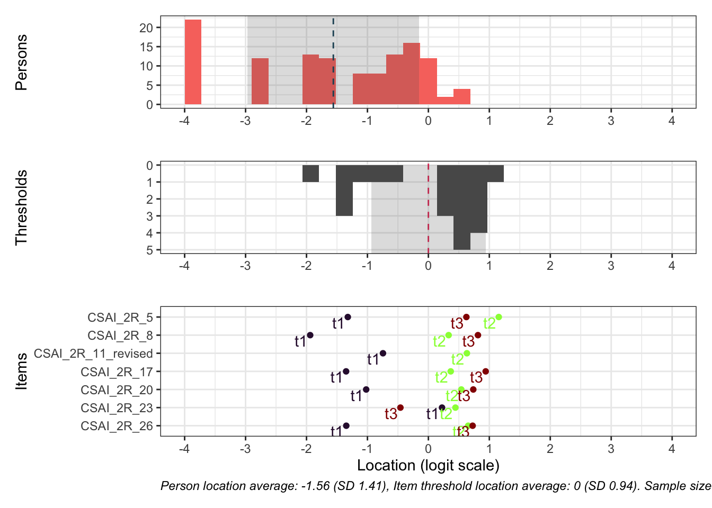
Code
#item hierarchy
itemlabels <- data.frame(itemnr = names(somatic_anxiety_CSAI2R_rasch_na_omit),
item = NA)
RIitemHierarchy(somatic_anxiety_CSAI2R_rasch_na_omit)
Code
#threshold locations
RIitemparams(somatic_anxiety_CSAI2R_rasch_na_omit)| Threshold 1 | Threshold 2 | Threshold 3 | Item location | |
|---|---|---|---|---|
| CSAI_2R_5 | -1.32 | 1.16 | 0.62 | 0.15 |
| CSAI_2R_8 | -1.94 | 0.33 | 0.81 | -0.26 |
| CSAI_2R_11_revised | -0.74 | 0.63 | NA | -0.06 |
| CSAI_2R_17 | -1.35 | 0.37 | 0.94 | -0.01 |
| CSAI_2R_20 | -1.02 | 0.54 | 0.74 | 0.09 |
| CSAI_2R_23 | 0.22 | 0.44 | -0.46 | 0.07 |
| CSAI_2R_26 | -1.35 | 0.65 | 0.73 | 0.01 |
| Note: | ||||
| Item location is the average of the thresholds for each item. |
Code
#analysis of response categories
RIitemCats(
somatic_anxiety_CSAI2R_rasch_na_omit,
items = "all",
xlims = c(-5, 5),
legend = "left"
)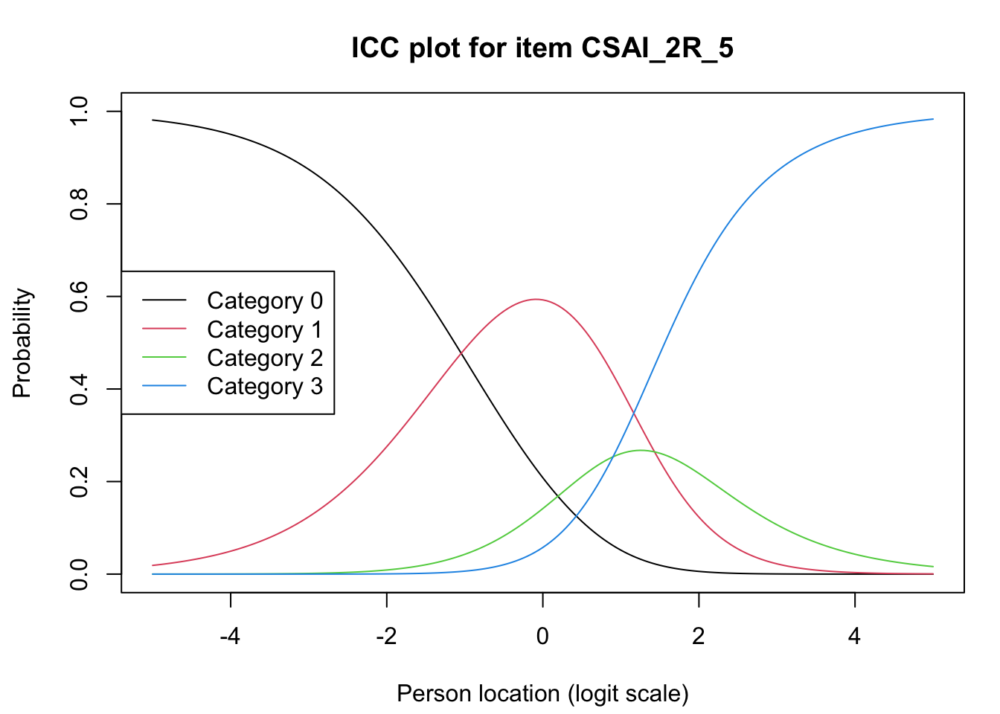
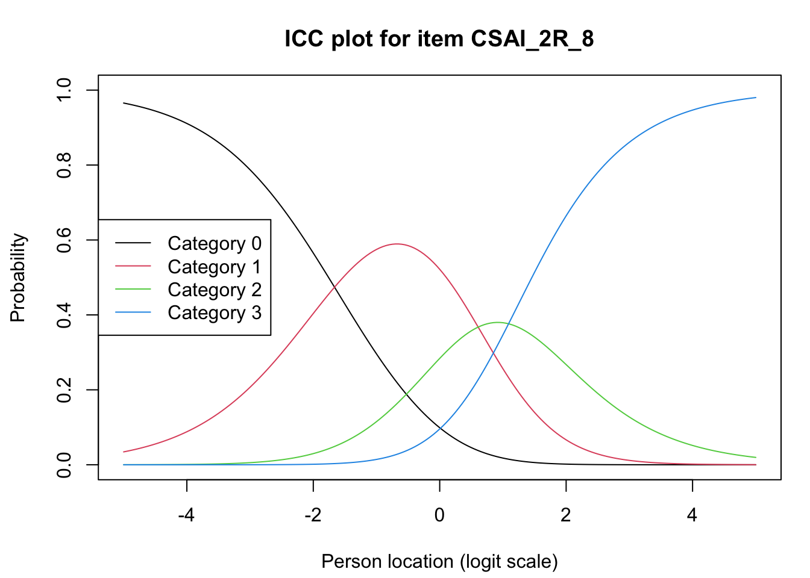
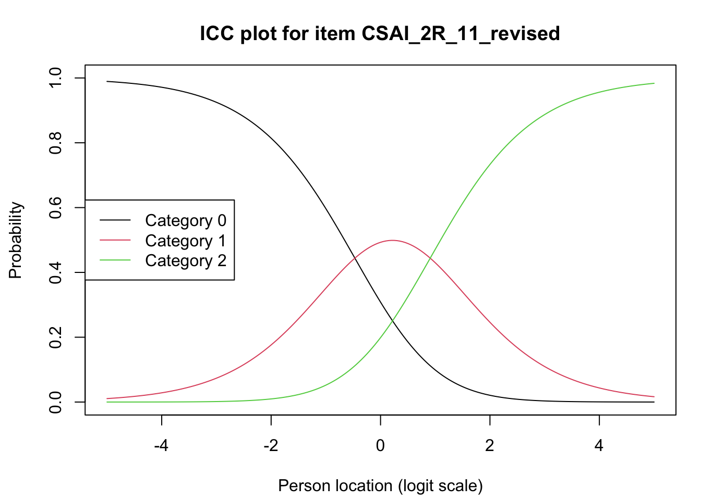
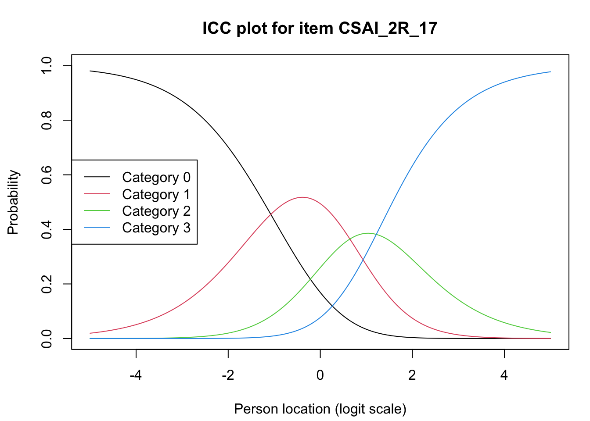
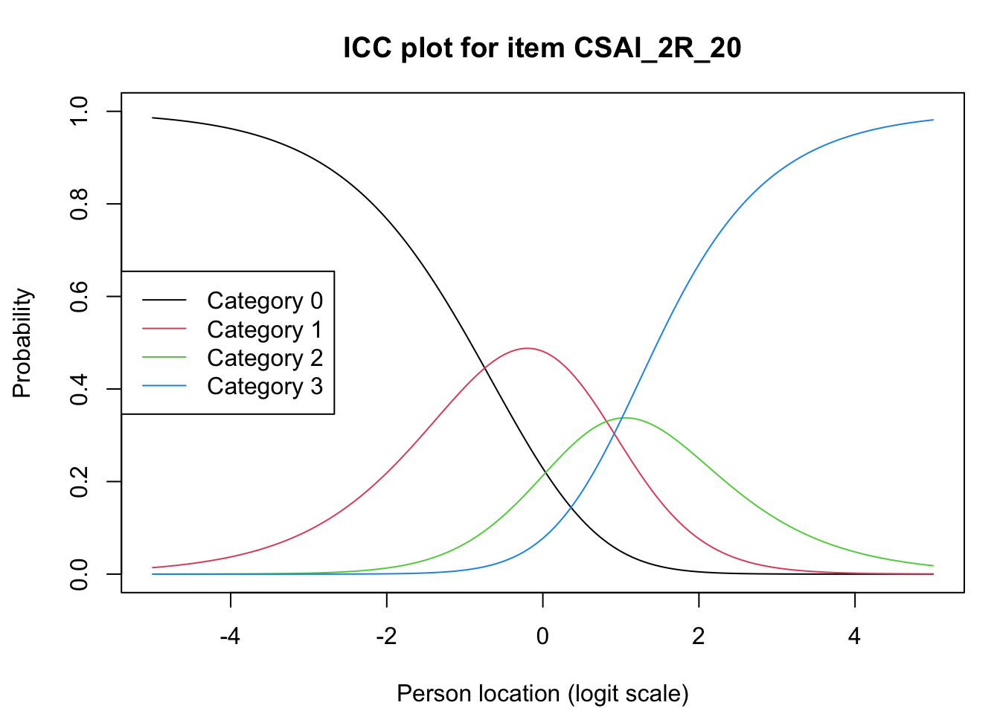
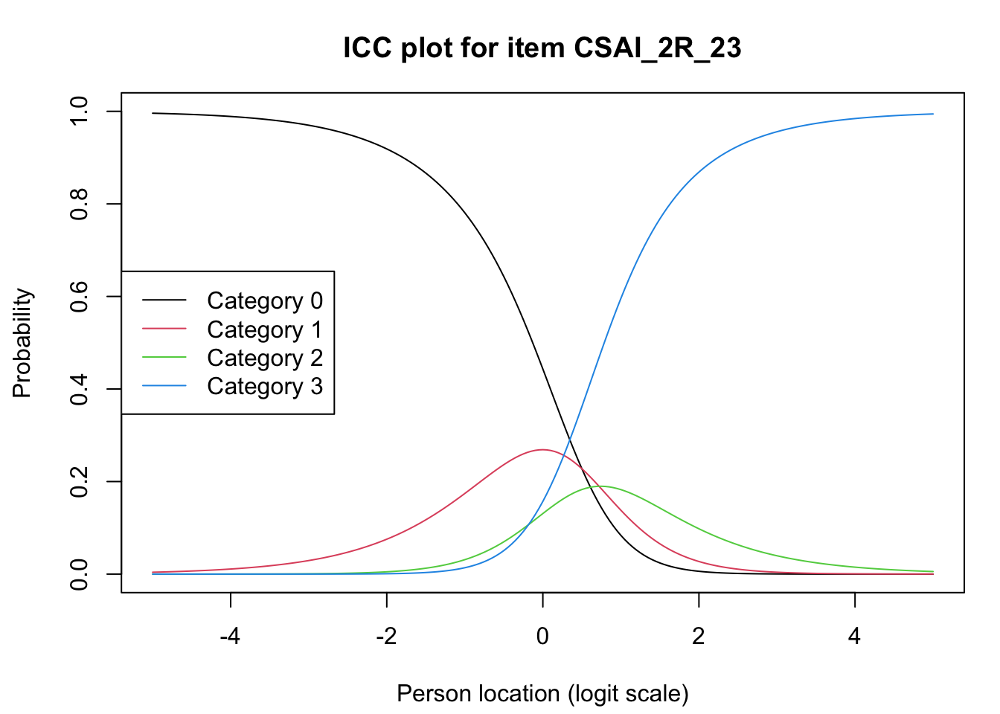
Code
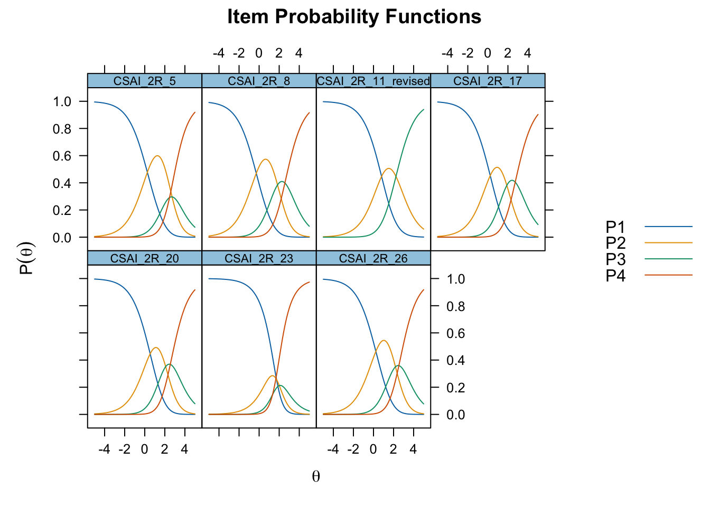
Code
#note: response categories have been analyzed using RIitemCats() function (in the easyRasch package) that estimates ICC plots using the eRm package. When there are response categories with fewer than 3 responses the easyRasch package uses estimation from the mirt package instead in the RIitemparams() and RItargeting() functions, and explain potential slight variations found in those outputs compared to the RIitemCats output. For transparency, ICC plots from the mirt package are therefore also displayed. Response category analysis was however consequently conducted using the RIitemCats() function that uses estimation from the eRm package. 

Items CSAI_2R_5 and CSAI_2R_23 have disordered item thresholds. CSAI_2R_26 was borderline underfit to the model (see conditional item fit analysis). Problems with local dependence were shown between items CSAI_2R_8 and CSAI_2R_26, and also between CSAI_2R_11_revised and CSAI_2R_20 (see the investigation of residual correlations and the partgam analysis). Starting by ordering item thresholds to see how the rest of the problems are impacted by that.
7.7 Re-analysis of somatic_anxiety_CSAI2R recoded version
Based on the analysis of the response categories and threshold locations, scale steps were merged and recoded so that each kept scale step had the highest response probability at some point on the person location scale, and also so that all threshold locations were in the right order for all items. Recoded items were given new names with the abbreviation “_recoded”.
Code
#add recoded somatic_anxiety_CSAI2R items
bulls_eye_merged_superfinal_data <- bulls_eye_merged_superfinal_data %>%
mutate(
# Recoding CSAI_2R_5 (2+3)
CSAI_2R_5_recoded = recode(
CSAI_2R_5,
`0` = 0,
`1` = 1,
`2` = 2,
`3` = 2
),
# Recoding CSAI_2R_23 (1+2)
CSAI_2R_23_recoded = recode(
CSAI_2R_23,
`0` = 0,
`1` = 1,
`2` = 1,
`3` = 2
))Code
#removing missing values
#in practice this means removing participants from the intervention study (Hockeystudien) that did not complete CSAI-2R
somatic_anxiety_CSAI2R_rasch_recoded_na_omit <- somatic_anxiety_CSAI2R_rasch_recoded %>%
select(CSAI_2R_5_recoded, CSAI_2R_8, CSAI_2R_11_revised, CSAI_2R_17, CSAI_2R_20, CSAI_2R_23_recoded, CSAI_2R_26) %>%
na.omit()
RImissing(somatic_anxiety_CSAI2R_rasch_recoded_na_omit)[1] "No missing data."Code
#re-analysis of response categories using somatic_anxiety_CSAI2R recoded
RIitemCats(
somatic_anxiety_CSAI2R_rasch_recoded_na_omit,
items = "all",
xlims = c(-5, 5),
legend = "left"
)
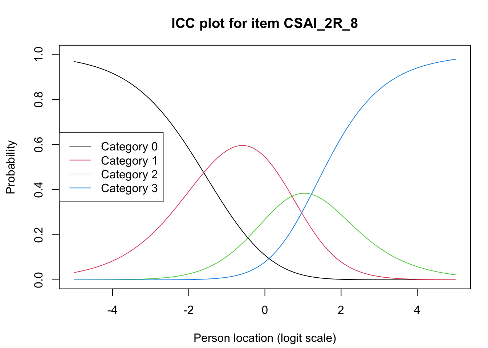
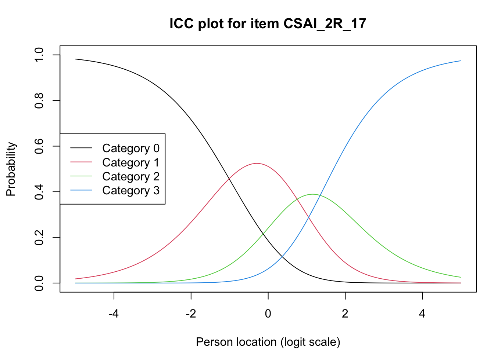
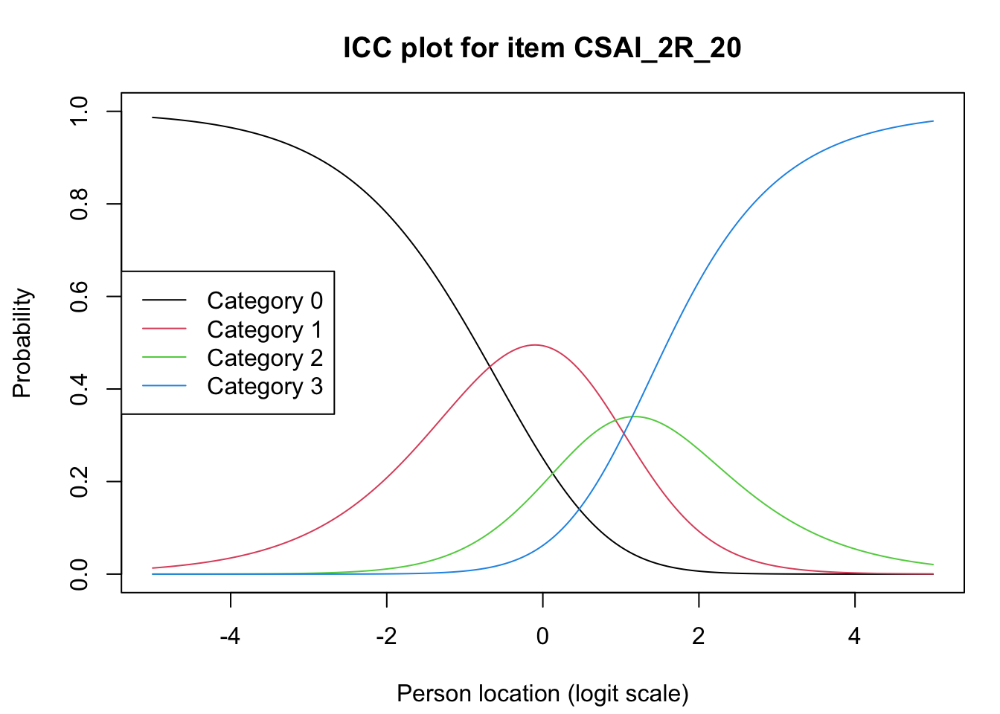
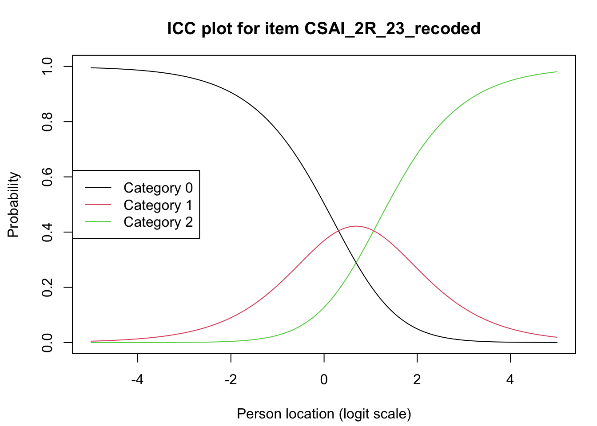
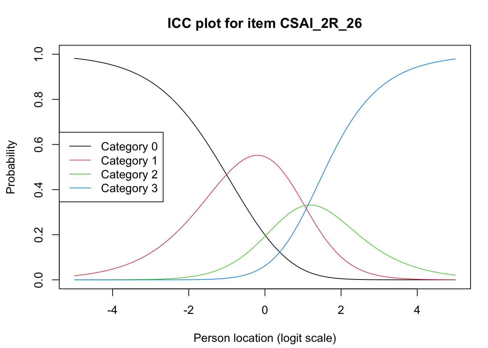
Code
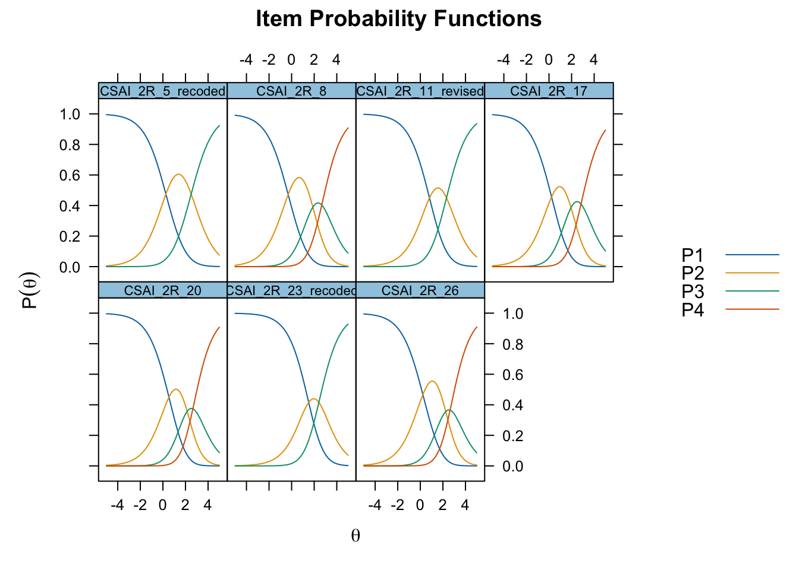
Code
#note: response categories have been analyzed using RIitemCats() function (in the easyRasch package) that estimates ICC plots using the eRm package. When there are response categories with fewer than 3 responses the easyRasch package uses estimation from the mirt package instead in the RIitemparams() and RItargeting() functions, and explain potential slight variations found in those outputs compared to the RIitemCats output. For transparency, ICC plots from the mirt package are therefore also displayed. Response category analysis was however consequently conducted using the RIitemCats() function that uses estimation from the eRm package. Code
#tile plot (response category frequency for the items)
RItileplot(somatic_anxiety_CSAI2R_rasch_recoded_na_omit)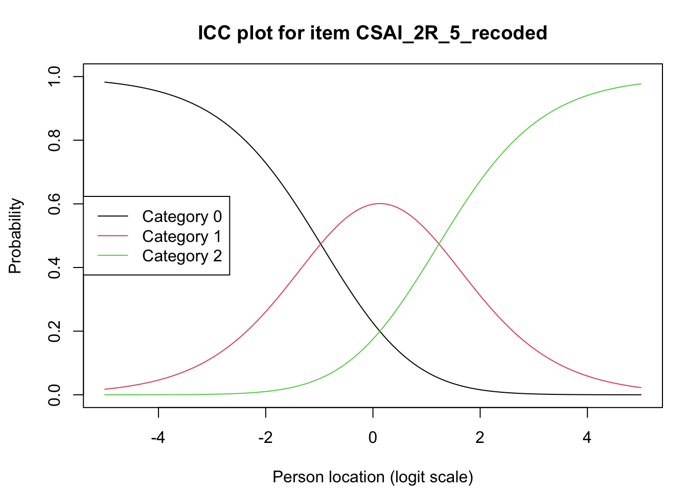
Code
#conditional likelihood ratio tests (CLR)
#a test of homogeneity that assesses whether item parameters are homogeneous across all levels of theta
clr_tests(somatic_anxiety_CSAI2R_rasch_recoded_na_omit, model = "PCM")
Conditional Likelihood Ratio Tests: clr df pvalue sig
overall 22.5 17 0.17 Code
#re-analysis of conditional item fit (assessing unidimensionaliity)
simfit1_somatic_anxiety_recoded <- RIgetfit(
somatic_anxiety_CSAI2R_rasch_recoded_na_omit,
iterations = 100,
cpu = 10
)
RIitemfit(
somatic_anxiety_CSAI2R_rasch_recoded_na_omit,
simfit1_somatic_anxiety_recoded,
cutoff = c(0.005, 0.995)
) | Item | InfitMSQ | Infit thresholds | OutfitMSQ | Outfit thresholds | Infit diff | Outfit diff | Relative location |
|---|---|---|---|---|---|---|---|
| CSAI_2R_5_recoded | 0.955 | [0.759, 1.244] | 0.964 | [0.704, 1.498] | no misfit | no misfit | 1.34 |
| CSAI_2R_8 | 0.893 | [0.764, 1.289] | 0.865 | [0.693, 1.31] | no misfit | no misfit | 1.32 |
| CSAI_2R_11_revised | 0.862 | [0.75, 1.401] | 0.74 | [0.657, 1.513] | no misfit | no misfit | 1.53 |
| CSAI_2R_17 | 1.041 | [0.788, 1.293] | 1.059 | [0.649, 1.792] | no misfit | no misfit | 1.57 |
| CSAI_2R_20 | 0.927 | [0.751, 1.271] | 0.879 | [0.704, 1.287] | no misfit | no misfit | 1.68 |
| CSAI_2R_23_recoded | 1.04 | [0.784, 1.288] | 0.939 | [0.763, 1.335] | no misfit | no misfit | 1.90 |
| CSAI_2R_26 | 1.302 | [0.754, 1.272] | 1.468 | [0.768, 1.309] | 0.03 | 0.159 | 1.60 |
| Note: | |||||||
|
MSQ values based on conditional calculations (n = 122 complete cases). Simulation based thresholds from 100 simulated datasets. |
Code
#re-analysis of conditional item characteristic curves
ICCplot(
as.data.frame(somatic_anxiety_CSAI2R_rasch_recoded_na_omit),
itemnumber = 1:4,
itemdescrip = c("CSAI_2R_5_recoded",
"CSAI_2R_8",
"CSAI_2R_11_revised",
"CSAI_2R_17"),
method = "cut"
)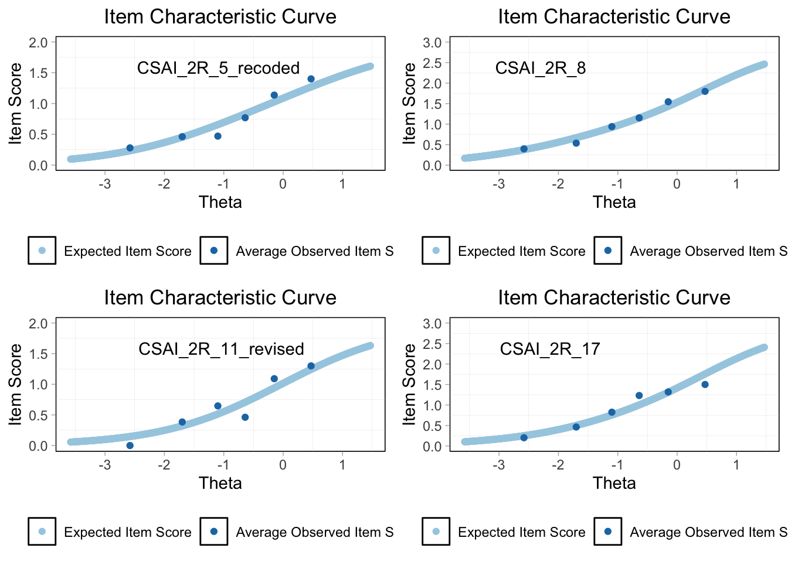
[1] "Please press Zoom on the Plots window to see the plot"Code
ICCplot(
as.data.frame(somatic_anxiety_CSAI2R_rasch_recoded_na_omit),
itemnumber = 5:7,
itemdescrip = c("CSAI_2R_20",
"CSAI_2R_23_recoded",
"CSAI_2R_26"),
method = "cut"
)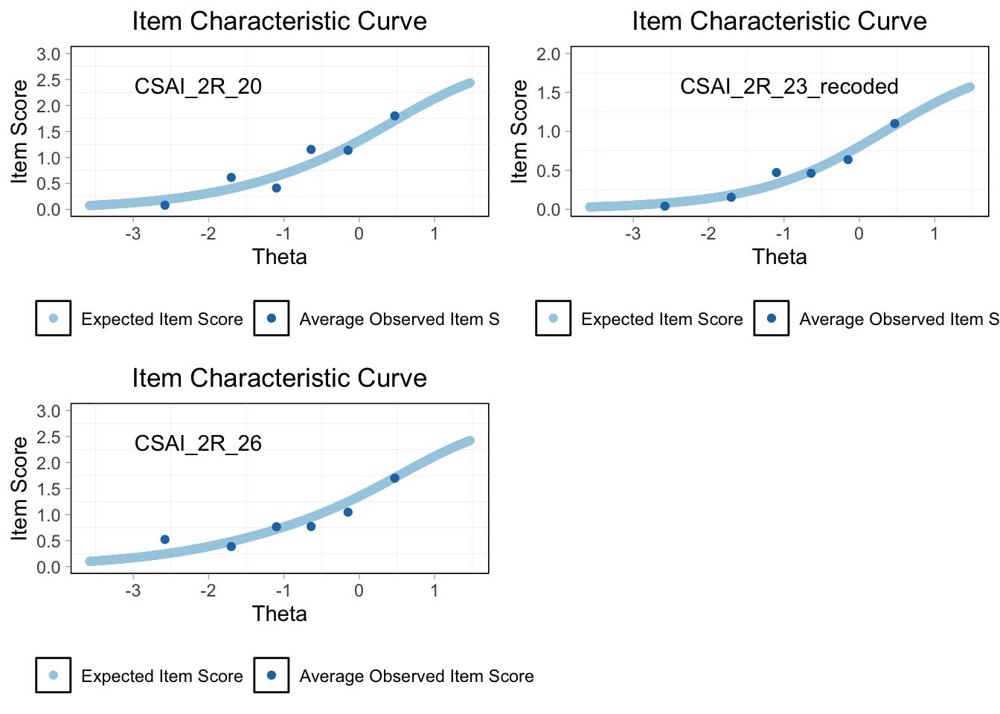
[1] "Please press Zoom on the Plots window to see the plot"Code
#re-analyzing PCA of residuals (assessing unidimensionality)
RIpcmPCA(somatic_anxiety_CSAI2R_rasch_recoded_na_omit)| Eigenvalues | Proportion of variance |
|---|---|
| 1.90 | 30.2% |
| 1.41 | 17.8% |
| 1.17 | 17.7% |
| 1.07 | 15.3% |
| 0.78 | 10.9% |
Code
#re-analysis of item restscores
RIrestscore(somatic_anxiety_CSAI2R_rasch_recoded_na_omit)| Item | Observed value | Model expected value | Absolute difference | Adjusted p-value (BH) | Statistical significance level | Location | Relative location |
|---|---|---|---|---|---|---|---|
| CSAI_2R_5_recoded | 0.63 | 0.60 | 0.03 | 0.930 | -0.22 | 1.34 | |
| CSAI_2R_8 | 0.69 | 0.62 | 0.07 | 0.563 | -0.24 | 1.32 | |
| CSAI_2R_11_revised | 0.69 | 0.59 | 0.10 | 0.309 | -0.03 | 1.53 | |
| CSAI_2R_17 | 0.62 | 0.61 | 0.01 | 0.930 | 0.02 | 1.57 | |
| CSAI_2R_20 | 0.65 | 0.60 | 0.05 | 0.725 | 0.12 | 1.68 | |
| CSAI_2R_23_recoded | 0.56 | 0.57 | 0.01 | 0.930 | 0.34 | 1.90 | |
| CSAI_2R_26 | 0.40 | 0.61 | 0.21 | 0.078 | . | 0.04 | 1.60 |
Code
#re-analysis of loadings on the first residual contrast (assessing clusters in data or multidimensionality)
RIloadLoc(somatic_anxiety_CSAI2R_rasch_recoded_na_omit)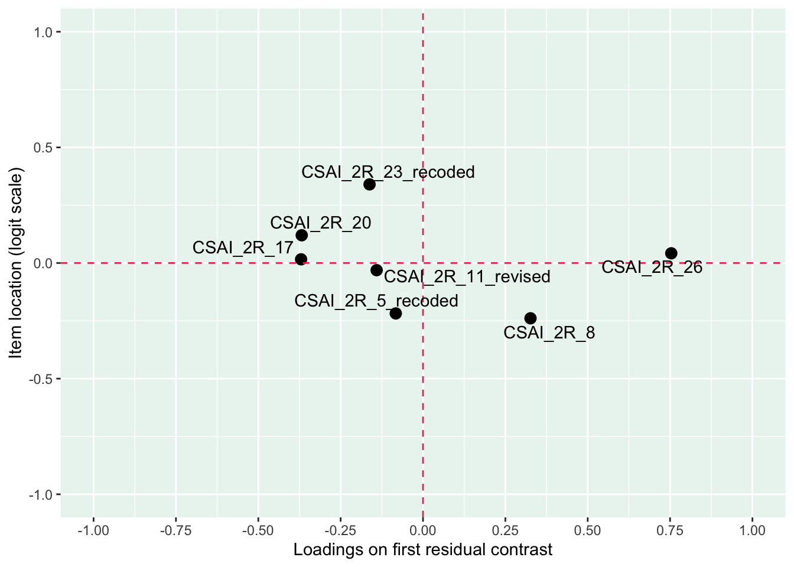
Code
#re-analysis of residual correlations
resid_cor_somatic_anxiety_recoded <- RIgetResidCor(
somatic_anxiety_CSAI2R_rasch_recoded_na_omit,
iterations = 800,
cpu = 10
)
RIresidcorr(somatic_anxiety_CSAI2R_rasch_recoded_na_omit, cutoff = resid_cor_somatic_anxiety_recoded$p99)| CSAI_2R_5_recoded | CSAI_2R_8 | CSAI_2R_11_revised | CSAI_2R_17 | CSAI_2R_20 | CSAI_2R_23_recoded | CSAI_2R_26 | |
|---|---|---|---|---|---|---|---|
| CSAI_2R_5_recoded | |||||||
| CSAI_2R_8 | -0.01 | ||||||
| CSAI_2R_11_revised | -0.1 | -0.12 | |||||
| CSAI_2R_17 | -0.2 | -0.21 | -0.06 | ||||
| CSAI_2R_20 | -0.13 | -0.42 | 0.19 | 0.03 | |||
| CSAI_2R_23_recoded | -0.03 | -0.28 | -0.33 | -0.05 | 0.04 | ||
| CSAI_2R_26 | -0.19 | 0.23 | -0.23 | -0.39 | -0.45 | -0.16 | |
| Note: | |||||||
|
Relative cut-off value is 0.217, which is 0.353 above the average correlation (-0.136). Correlations above the cut-off are highlighted in red text. |
Code
#re-analysis of partial gamma coefficients (assessing local independence)
RIpartgamLD(somatic_anxiety_CSAI2R_rasch_recoded_na_omit) #shows only significant results| Item 1 | Item 2 | Partial gamma | SE | Lower CI | Upper CI | Adjusted p-value (BH) |
|---|---|---|---|---|---|---|
| CSAI_2R_11_revised | CSAI_2R_20 | 0.618 | 0.138 | 0.347 | 0.889 | 0.000 |
| CSAI_2R_20 | CSAI_2R_11_revised | 0.613 | 0.152 | 0.315 | 0.912 | 0.002 |
| CSAI_2R_8 | CSAI_2R_26 | 0.565 | 0.146 | 0.279 | 0.850 | 0.004 |
| CSAI_2R_26 | CSAI_2R_8 | 0.531 | 0.154 | 0.229 | 0.832 | 0.023 |
Code
partgam_LD(as.data.frame(somatic_anxiety_CSAI2R_rasch_recoded_na_omit)) #shows all output, also non-significant results Item1 Item2 gamma se pvalue padj.BH sig
1 CSAI_2R_5_recoded CSAI_2R_8 0.1973 0.2138 0.3561 1.0000
2 CSAI_2R_5_recoded CSAI_2R_11_revised -0.0071 0.2391 0.9763 1.0000
3 CSAI_2R_5_recoded CSAI_2R_17 0.1049 0.2044 0.6079 1.0000
4 CSAI_2R_5_recoded CSAI_2R_20 0.1548 0.2106 0.4623 1.0000
5 CSAI_2R_5_recoded CSAI_2R_23_recoded 0.2537 0.2216 0.2523 1.0000
6 CSAI_2R_5_recoded CSAI_2R_26 -0.0800 0.2133 0.7076 1.0000
7 CSAI_2R_8 CSAI_2R_11_revised -0.2687 0.2220 0.2262 1.0000
8 CSAI_2R_8 CSAI_2R_17 -0.1471 0.2140 0.4919 1.0000
9 CSAI_2R_8 CSAI_2R_20 -0.2911 0.2161 0.1778 1.0000
10 CSAI_2R_8 CSAI_2R_23_recoded -0.3571 0.2249 0.1124 1.0000
11 CSAI_2R_8 CSAI_2R_26 0.5647 0.1456 0.0001 0.0044 **
12 CSAI_2R_11_revised CSAI_2R_17 0.2344 0.2232 0.2937 1.0000
13 CSAI_2R_11_revised CSAI_2R_20 0.6180 0.1380 0.0000 0.0003 ***
14 CSAI_2R_11_revised CSAI_2R_23_recoded -0.4227 0.1857 0.0229 0.9603
15 CSAI_2R_11_revised CSAI_2R_26 -0.0370 0.2062 0.8574 1.0000
16 CSAI_2R_17 CSAI_2R_20 0.1358 0.1847 0.4621 1.0000
17 CSAI_2R_17 CSAI_2R_23_recoded 0.1382 0.2246 0.5383 1.0000
18 CSAI_2R_17 CSAI_2R_26 -0.3381 0.1700 0.0468 1.0000
19 CSAI_2R_20 CSAI_2R_23_recoded 0.1453 0.2278 0.5235 1.0000
20 CSAI_2R_20 CSAI_2R_26 -0.3056 0.1943 0.1157 1.0000
21 CSAI_2R_23_recoded CSAI_2R_26 0.0484 0.2190 0.8251 1.0000
lower upper
1 -0.2217 0.6163
2 -0.4757 0.4615
3 -0.2958 0.5056
4 -0.2579 0.5675
5 -0.1807 0.6881
6 -0.4981 0.3381
7 -0.7038 0.1665
8 -0.5664 0.2723
9 -0.7146 0.1323
10 -0.7980 0.0837
11 0.2792 0.8502
12 -0.2031 0.6719
13 0.3475 0.8885
14 -0.7867 -0.0586
15 -0.4411 0.3670
16 -0.2262 0.4978
17 -0.3020 0.5784
18 -0.6714 -0.0049
19 -0.3011 0.5917
20 -0.6863 0.0752
21 -0.3808 0.4776
Item1 Item2 gamma se pvalue padj.BH sig
1 CSAI_2R_8 CSAI_2R_5_recoded 0.1079 0.2293 0.6380 1.0000
2 CSAI_2R_11_revised CSAI_2R_5_recoded 0.1167 0.2416 0.6292 1.0000
3 CSAI_2R_11_revised CSAI_2R_8 -0.1074 0.2198 0.6250 1.0000
4 CSAI_2R_17 CSAI_2R_5_recoded -0.0256 0.2145 0.9049 1.0000
5 CSAI_2R_17 CSAI_2R_8 -0.4667 0.1698 0.0060 0.2514
6 CSAI_2R_17 CSAI_2R_11_revised 0.0145 0.2166 0.9466 1.0000
7 CSAI_2R_20 CSAI_2R_5_recoded 0.1779 0.2078 0.3919 1.0000
8 CSAI_2R_20 CSAI_2R_8 -0.2821 0.2096 0.1784 1.0000
9 CSAI_2R_20 CSAI_2R_11_revised 0.6133 0.1522 0.0001 0.0024 **
10 CSAI_2R_20 CSAI_2R_17 0.2867 0.1768 0.1049 1.0000
11 CSAI_2R_23_recoded CSAI_2R_5_recoded 0.2154 0.2336 0.3565 1.0000
12 CSAI_2R_23_recoded CSAI_2R_8 -0.4530 0.2140 0.0343 1.0000
13 CSAI_2R_23_recoded CSAI_2R_11_revised -0.3509 0.2075 0.0909 1.0000
14 CSAI_2R_23_recoded CSAI_2R_17 0.2581 0.2117 0.2229 1.0000
15 CSAI_2R_23_recoded CSAI_2R_20 -0.0147 0.2042 0.9426 1.0000
16 CSAI_2R_26 CSAI_2R_5_recoded -0.2680 0.1873 0.1525 1.0000
17 CSAI_2R_26 CSAI_2R_8 0.5306 0.1536 0.0006 0.0232 *
18 CSAI_2R_26 CSAI_2R_11_revised -0.1200 0.2035 0.5555 1.0000
19 CSAI_2R_26 CSAI_2R_17 -0.4629 0.1593 0.0037 0.1537
20 CSAI_2R_26 CSAI_2R_20 -0.5183 0.1638 0.0016 0.0652 .
21 CSAI_2R_26 CSAI_2R_23_recoded -0.0870 0.2183 0.6904 1.0000
lower upper
1 -0.3416 0.5574
2 -0.3569 0.5903
3 -0.5383 0.3234
4 -0.4461 0.3948
5 -0.7994 -0.1339
6 -0.4100 0.4390
7 -0.2293 0.5852
8 -0.6929 0.1288
9 0.3149 0.9116
10 -0.0599 0.6333
11 -0.2425 0.6733
12 -0.8724 -0.0336
13 -0.7577 0.0559
14 -0.1569 0.6730
15 -0.4149 0.3855
16 -0.6352 0.0992
17 0.2295 0.8317
18 -0.5189 0.2789
19 -0.7750 -0.1507
20 -0.8393 -0.1973
21 -0.5148 0.3409Code
#re-analysis of targeting
RItargeting(somatic_anxiety_CSAI2R_rasch_recoded_na_omit)Code
#re-analysis of item hierarchy
itemlabels <- data.frame(itemnr = names(somatic_anxiety_CSAI2R_rasch_recoded_na_omit),
item = NA)
RIitemHierarchy(somatic_anxiety_CSAI2R_rasch_recoded_na_omit)Code
#threshold locations
RIitemparams(somatic_anxiety_CSAI2R_rasch_recoded_na_omit)| Threshold 1 | Threshold 2 | Threshold 3 | Item location | |
|---|---|---|---|---|
| CSAI_2R_5_recoded | -1.32 | 0.88 | NA | -0.22 |
| CSAI_2R_8 | -1.95 | 0.36 | 0.87 | -0.24 |
| CSAI_2R_11_revised | -0.74 | 0.68 | NA | -0.03 |
| CSAI_2R_17 | -1.36 | 0.41 | 1.00 | 0.02 |
| CSAI_2R_20 | -1.03 | 0.58 | 0.80 | 0.12 |
| CSAI_2R_23_recoded | -0.04 | 0.72 | NA | 0.34 |
| CSAI_2R_26 | -1.35 | 0.70 | 0.79 | 0.04 |
| Note: | ||||
| Item location is the average of the thresholds for each item. |
CSAI_2R_26 is still underfit to the model (see conditional item fit analysis). There are still problems with local dependence between items CSAI_2R_8 and CSAI_2R_26 (see the investigation of residual correlations and the partgam analysis), but only partly between CSAI_2R_11_revised and CSAI_2R_20 (significant result in the partgam analysis, but the residual correlation is below the cut-off value).
Removing CSAI_2R_26 as it is both underfit to the model (may not belong to the dimension), and demonstrate problems with local dependence.
7.8 Re-analysis of somatic_anxiety_CSAI2R recoded version and trimmed version
Removing CSAI_2R_26. Rasch re-analysis of CSAI-2R subscale Somatic anxiety recoded and trimmed version (items 5, 8, 11, 17, 20, 23).
Code
#preparing data frame with somatic_anxiety_CSAI2R items
somatic_anxiety_CSAI2R_rasch_recoded_trimmed <- bulls_eye_merged_superfinal_data[, c(
"CSAI_2R_5_recoded",
"CSAI_2R_8",
"CSAI_2R_11_revised",
"CSAI_2R_17",
"CSAI_2R_20",
"CSAI_2R_23_recoded"
)]
#investigating missing values
RImissing(somatic_anxiety_CSAI2R_rasch_recoded_trimmed)Code
#removing missing values
#in practice this means removing participants from the intervention study (Hockeystudien) that did not complete CSAI-2R
somatic_anxiety_CSAI2R_rasch_recoded_trimmed_na_omit <- somatic_anxiety_CSAI2R_rasch_recoded_trimmed %>%
select(CSAI_2R_5_recoded, CSAI_2R_8, CSAI_2R_11_revised, CSAI_2R_17, CSAI_2R_20, CSAI_2R_23_recoded) %>%
na.omit()
RImissing(somatic_anxiety_CSAI2R_rasch_recoded_trimmed_na_omit)[1] "No missing data."Code
#tile plot (response category frequency for the items)
RItileplot(somatic_anxiety_CSAI2R_rasch_recoded_trimmed_na_omit)Code
#conditional likelihood ratio tests (CLR)
#a test of homogeneity that assesses whether item parameters are homogeneous across all levels of theta
clr_tests(somatic_anxiety_CSAI2R_rasch_recoded_trimmed_na_omit, model = "PCM")
Conditional Likelihood Ratio Tests: clr df pvalue sig
overall 16.1 14 0.31 Code
#conditional item fit (assessing unidimensionality)
simfit1_somatic_anxiety_recoded_trimmed <- RIgetfit(
somatic_anxiety_CSAI2R_rasch_recoded_trimmed_na_omit,
iterations = 100,
cpu = 10
)
RIitemfit(
somatic_anxiety_CSAI2R_rasch_recoded_trimmed_na_omit,
simfit1_somatic_anxiety_recoded_trimmed,
cutoff = c(0.005, 0.995)
) | Item | InfitMSQ | Infit thresholds | OutfitMSQ | Outfit thresholds | Infit diff | Outfit diff | Relative location |
|---|---|---|---|---|---|---|---|
| CSAI_2R_5_recoded | 1.016 | [0.767, 1.231] | 1.024 | [0.669, 1.373] | no misfit | no misfit | 1.40 |
| CSAI_2R_8 | 1.148 | [0.823, 1.277] | 1.149 | [0.797, 1.334] | no misfit | no misfit | 1.37 |
| CSAI_2R_11_revised | 0.893 | [0.703, 1.278] | 0.818 | [0.711, 1.359] | no misfit | no misfit | 1.62 |
| CSAI_2R_17 | 1.017 | [0.718, 1.264] | 1.042 | [0.561, 1.63] | no misfit | no misfit | 1.66 |
| CSAI_2R_20 | 0.863 | [0.788, 1.349] | 0.835 | [0.723, 1.405] | no misfit | no misfit | 1.78 |
| CSAI_2R_23_recoded | 1.09 | [0.805, 1.26] | 1.067 | [0.812, 1.249] | no misfit | no misfit | 2.02 |
| Note: | |||||||
|
MSQ values based on conditional calculations (n = 122 complete cases). Simulation based thresholds from 100 simulated datasets. |
Code
#conditional item characteristic curves
ICCplot(
as.data.frame(somatic_anxiety_CSAI2R_rasch_recoded_trimmed_na_omit),
itemnumber = 1:4,
itemdescrip = c("CSAI_2R_5_recoded",
"CSAI_2R_8",
"CSAI_2R_11_revised",
"CSAI_2R_17"),
method = "cut"
)[1] "Please press Zoom on the Plots window to see the plot"Code
ICCplot(
as.data.frame(somatic_anxiety_CSAI2R_rasch_recoded_trimmed_na_omit),
itemnumber = 5:6,
itemdescrip = c("CSAI_2R_20",
"CSAI_2R_23_recoded"),
method = "cut"
)[1] "Please press Zoom on the Plots window to see the plot"Code
#PCA of residuals (assessing unidimensionality)
RIpcmPCA(somatic_anxiety_CSAI2R_rasch_recoded_trimmed_na_omit) | Eigenvalues | Proportion of variance |
|---|---|
| 1.59 | 27.3% |
| 1.47 | 23.5% |
| 1.22 | 20.8% |
| 0.97 | 17.3% |
| 0.75 | 11% |
Code
#item restscores
RIrestscore(somatic_anxiety_CSAI2R_rasch_recoded_trimmed_na_omit)| Item | Observed value | Model expected value | Absolute difference | Adjusted p-value (BH) | Statistical significance level | Location | Relative location |
|---|---|---|---|---|---|---|---|
| CSAI_2R_5_recoded | 0.64 | 0.65 | 0.01 | 0.882 | -0.23 | 1.40 | |
| CSAI_2R_8 | 0.60 | 0.67 | 0.07 | 0.671 | -0.26 | 1.37 | |
| CSAI_2R_11_revised | 0.70 | 0.64 | 0.06 | 0.671 | -0.01 | 1.62 | |
| CSAI_2R_17 | 0.67 | 0.66 | 0.01 | 0.882 | 0.02 | 1.66 | |
| CSAI_2R_20 | 0.72 | 0.65 | 0.07 | 0.671 | 0.14 | 1.78 | |
| CSAI_2R_23_recoded | 0.57 | 0.61 | 0.04 | 0.882 | 0.38 | 2.02 |
Code
#loadings on the first residual contrast (assessing clusters in data or multidimensionality)
RIloadLoc(somatic_anxiety_CSAI2R_rasch_recoded_trimmed_na_omit)Code
#residual correlations
resid_cor_somatic_anxiety_recoded_trimmed <- RIgetResidCor(
somatic_anxiety_CSAI2R_rasch_recoded_trimmed_na_omit,
iterations = 800,
cpu = 10
)
RIresidcorr(somatic_anxiety_CSAI2R_rasch_recoded_trimmed_na_omit,
cutoff = resid_cor_somatic_anxiety_recoded_trimmed$p99)| CSAI_2R_5_recoded | CSAI_2R_8 | CSAI_2R_11_revised | CSAI_2R_17 | CSAI_2R_20 | CSAI_2R_23_recoded | |
|---|---|---|---|---|---|---|
| CSAI_2R_5_recoded | ||||||
| CSAI_2R_8 | 0.01 | |||||
| CSAI_2R_11_revised | -0.16 | -0.1 | ||||
| CSAI_2R_17 | -0.3 | -0.22 | -0.16 | |||
| CSAI_2R_20 | -0.24 | -0.44 | 0.09 | -0.12 | ||
| CSAI_2R_23_recoded | -0.07 | -0.24 | -0.39 | -0.13 | -0.04 | |
| Note: | ||||||
|
Relative cut-off value is 0.173, which is 0.341 above the average correlation (-0.167). Correlations above the cut-off are highlighted in red text. |
Code
#partial gamma coefficients (assessing local independence)
RIpartgamLD(somatic_anxiety_CSAI2R_rasch_recoded_trimmed_na_omit) #shows only significant results| Item 1 | Item 2 | Partial gamma | SE | Lower CI | Upper CI | Adjusted p-value (BH) |
|---|---|---|---|---|---|---|
| CSAI_2R_20 | CSAI_2R_11_revised | 0.573 | 0.149 | 0.280 | 0.866 | 0.004 |
| CSAI_2R_11_revised | CSAI_2R_20 | 0.503 | 0.152 | 0.205 | 0.801 | 0.028 |
Code
partgam_LD(as.data.frame(somatic_anxiety_CSAI2R_rasch_recoded_trimmed_na_omit)) #shows all output, also non-significant results Item1 Item2 gamma se pvalue padj.BH sig
1 CSAI_2R_5_recoded CSAI_2R_8 0.3333 0.2078 0.1087 1.0000
2 CSAI_2R_5_recoded CSAI_2R_11_revised -0.1489 0.2125 0.4833 1.0000
3 CSAI_2R_5_recoded CSAI_2R_17 -0.0395 0.2216 0.8586 1.0000
4 CSAI_2R_5_recoded CSAI_2R_20 -0.0201 0.2113 0.9241 1.0000
5 CSAI_2R_5_recoded CSAI_2R_23_recoded 0.0156 0.2301 0.9459 1.0000
6 CSAI_2R_8 CSAI_2R_11_revised -0.0186 0.2092 0.9290 1.0000
7 CSAI_2R_8 CSAI_2R_17 -0.2542 0.1931 0.1880 1.0000
8 CSAI_2R_8 CSAI_2R_20 -0.4302 0.1769 0.0150 0.4505
9 CSAI_2R_8 CSAI_2R_23_recoded -0.2789 0.2124 0.1892 1.0000
10 CSAI_2R_11_revised CSAI_2R_17 -0.0441 0.2280 0.8466 1.0000
11 CSAI_2R_11_revised CSAI_2R_20 0.5028 0.1521 0.0009 0.0284 *
12 CSAI_2R_11_revised CSAI_2R_23_recoded -0.4455 0.1888 0.0183 0.5478
13 CSAI_2R_17 CSAI_2R_20 -0.0064 0.1894 0.9732 1.0000
14 CSAI_2R_17 CSAI_2R_23_recoded 0.1639 0.2298 0.4757 1.0000
15 CSAI_2R_20 CSAI_2R_23_recoded 0.2712 0.2153 0.2079 1.0000
lower upper
1 -0.0740 0.7407
2 -0.5654 0.2675
3 -0.4739 0.3949
4 -0.4343 0.3940
5 -0.4354 0.4667
6 -0.4286 0.3914
7 -0.6327 0.1243
8 -0.7768 -0.0835
9 -0.6952 0.1374
10 -0.4910 0.4027
11 0.2047 0.8009
12 -0.8155 -0.0756
13 -0.3776 0.3648
14 -0.2865 0.6144
15 -0.1509 0.6932
Item1 Item2 gamma se pvalue padj.BH sig
1 CSAI_2R_8 CSAI_2R_5_recoded 0.1720 0.2065 0.4050 1.0000
2 CSAI_2R_11_revised CSAI_2R_5_recoded -0.0333 0.2342 0.8868 1.0000
3 CSAI_2R_11_revised CSAI_2R_8 0.1507 0.2119 0.4769 1.0000
4 CSAI_2R_17 CSAI_2R_5_recoded -0.0935 0.2260 0.6789 1.0000
5 CSAI_2R_17 CSAI_2R_8 -0.1111 0.2093 0.5955 1.0000
6 CSAI_2R_17 CSAI_2R_11_revised -0.1642 0.2043 0.4217 1.0000
7 CSAI_2R_20 CSAI_2R_5_recoded -0.0476 0.2215 0.8298 1.0000
8 CSAI_2R_20 CSAI_2R_8 -0.3014 0.2080 0.1474 1.0000
9 CSAI_2R_20 CSAI_2R_11_revised 0.5730 0.1494 0.0001 0.0037 **
10 CSAI_2R_20 CSAI_2R_17 0.1704 0.1956 0.3838 1.0000
11 CSAI_2R_23_recoded CSAI_2R_5_recoded 0.0085 0.2437 0.9720 1.0000
12 CSAI_2R_23_recoded CSAI_2R_8 -0.1712 0.2313 0.4593 1.0000
13 CSAI_2R_23_recoded CSAI_2R_11_revised -0.4833 0.1877 0.0100 0.3011
14 CSAI_2R_23_recoded CSAI_2R_17 0.1579 0.2204 0.4738 1.0000
15 CSAI_2R_23_recoded CSAI_2R_20 -0.0294 0.2003 0.8833 1.0000
lower upper
1 -0.2328 0.5767
2 -0.4924 0.4257
3 -0.2646 0.5659
4 -0.5364 0.3493
5 -0.5213 0.2991
6 -0.5647 0.2363
7 -0.4817 0.3865
8 -0.7091 0.1064
9 0.2803 0.8658
10 -0.2131 0.5538
11 -0.4690 0.4861
12 -0.6245 0.2822
13 -0.8513 -0.1154
14 -0.2742 0.5900
15 -0.4220 0.3631Code
#targeting
RItargeting(somatic_anxiety_CSAI2R_rasch_recoded_trimmed_na_omit)
Code
#item hierarchy
itemlabels <- data.frame(
itemnr = names(somatic_anxiety_CSAI2R_rasch_recoded_trimmed_na_omit),
item = NA
)
RIitemHierarchy(somatic_anxiety_CSAI2R_rasch_recoded_trimmed_na_omit)Code
#threshold locations
RIitemparams(somatic_anxiety_CSAI2R_rasch_recoded_trimmed_na_omit)| Threshold 1 | Threshold 2 | Threshold 3 | Item location | |
|---|---|---|---|---|
| CSAI_2R_5_recoded | -1.44 | 0.98 | NA | -0.23 |
| CSAI_2R_8 | -2.17 | 0.44 | 0.95 | -0.26 |
| CSAI_2R_11_revised | -0.81 | 0.78 | NA | -0.01 |
| CSAI_2R_17 | -1.50 | 0.50 | 1.07 | 0.02 |
| CSAI_2R_20 | -1.12 | 0.69 | 0.86 | 0.14 |
| CSAI_2R_23_recoded | -0.05 | 0.81 | NA | 0.38 |
| Note: | ||||
| Item location is the average of the thresholds for each item. |
Code
#analysis of response categories
RIitemCats(
somatic_anxiety_CSAI2R_rasch_recoded_trimmed_na_omit,
items = "all",
xlims = c(-5, 5),
legend = "left"
)
Code
Code
#note: response categories have been analyzed using RIitemCats() function (in the easyRasch package) that estimates ICC plots using the eRm package. When there are response categories with fewer than 3 responses the easyRasch package uses estimation from the mirt package instead in the RIitemparams() and RItargeting() functions, and explain potential slight variations found in those outputs compared to the RIitemCats output. For transparency, ICC plots from the mirt package are therefore also displayed. Response category analysis was however consequently conducted using the RIitemCats() function that uses estimation from the eRm package. After removing CSAI_2R_26 there are no remaining indications of items not belonging to the dimension. There are still some potential problem with local dependence between items CSAI_2R_11_revised and CSAI_2R_20 (see the partgam analysis), but since their residual correlation is below the cut-off value, both items are kept in the sub-scale for the validity analysis. Poor reliability was demonstrated in the TIF.
7.9 Somatic anxiety (CSAI-2R) and BEA validity analysis
Validity between somatic_anxiety_CSAI2R and BEA is investigated by correlation analysis. As both scales has undergone Rasch analysis, participants theta estimates (computed with weighted likelihood estimation - WLE) will be correlated, and since thetas are interval data, Pearson’s correlation is applied.
Code
#complete cases data frame for validity analyses
#removing missing values in relevant items for complete cases analysis
#only BE items and one item from the other scales in the bulls eye study
#is needed (in this case the SubjektivPrestation item)
#this is because there are no missing values for the other scales
#after the intervention study (Hockeystudien) participants have been removed
#therefore this data frame will work for all validity analyses
items_validity_analyses <- c(
"BE_Competition_recoded",
"BE_Training_recoded",
"BE_PreparationRecovery",
"BE_Life",
"SubjektivPrestation"
)
data_complete_cases <- bulls_eye_merged_superfinal_data[complete.cases(bulls_eye_merged_superfinal_data[, items_validity_analyses]), ]
#155 participants to begin with
#33 participants from the intervention study (Hockeystudien) were removed (did not complete any scale beside Bulls Eye)
#1 participant (not from the intervention study) who completed the other scales but not the dartboard in Bulls Eye (only other parts of BE) and were therefore removed
#results in a complete cases data frame with 121 participants
nrow(data_complete_cases)[1] 121Code
#item data frames
BE_validity_analyses <- data_complete_cases[, c(
"BE_Competition_recoded",
"BE_Training_recoded",
"BE_PreparationRecovery",
"BE_Life"
)]
somatic_anxiety_CSAI2R_validity_analyses <- data_complete_cases[, c(
"CSAI_2R_5_recoded",
"CSAI_2R_8",
"CSAI_2R_11_revised",
"CSAI_2R_17",
"CSAI_2R_20",
"CSAI_2R_23_recoded"
)]
#extracting thetas
BE_thetas <- RIestThetas(BE_validity_analyses)
somatic_anxiety_CSAI2R_thetas <- RIestThetas(somatic_anxiety_CSAI2R_validity_analyses)
#adding thetas to the data frame
data_complete_cases$BE_thetas_WLE <- BE_thetas$WLE
data_complete_cases$somatic_anxiety_CSAI2R_thetas_WLE <- somatic_anxiety_CSAI2R_thetas$WLECode
correlation_BE_somatic_anxiety_CSAI2R <- cor_test(
data_complete_cases,
x = "BE_thetas_WLE",
y = "somatic_anxiety_CSAI2R_thetas_WLE",
method = "pearson"
)
print(correlation_BE_somatic_anxiety_CSAI2R)Parameter1 | Parameter2 | r | 95% CI
-------------------------------------------------------------------------
BE_thetas_WLE | somatic_anxiety_CSAI2R_thetas_WLE | -0.13 | [-0.30, 0.05]
Parameter1 | t(119) | p
------------------------------
BE_thetas_WLE | -1.42 | 0.159
Observations: 121Code
plot(correlation_BE_somatic_anxiety_CSAI2R)Some participants did not complete BEA and CSAI-2R during the same day as intended. Therefore, a sensitivity analysis is conducted.
Code
#creating data frame with only participants that completed Bulls Eye and the other scales during the same day
#since 17 participants did not (has already been checked in a prior validity analysis), 104 participants will remain in the sensitivity analysis
data_complete_cases_less_than_1day <- subset(data_complete_cases, time_latency_survey1_bulls_eye1_days < 1)Code
#looking only at participants who completed Bulls Eye and the other scales during the same day (N = 104)
#sensitivity analysis somatic_anxiety_CSAI2R and BE
BE_validity_analyses_less1day <- data_complete_cases_less_than_1day[, c(
"BE_Competition_recoded",
"BE_Training_recoded",
"BE_PreparationRecovery",
"BE_Life"
)]
somatic_anxiety_CSAI2R_validity_analyses_less1day <- data_complete_cases_less_than_1day[, c(
"CSAI_2R_5_recoded",
"CSAI_2R_8",
"CSAI_2R_11_revised",
"CSAI_2R_17",
"CSAI_2R_20",
"CSAI_2R_23_recoded"
)]
#extracting thetas
BE_thetas_less1day <- RIestThetas(BE_validity_analyses_less1day)
somatic_anxiety_CSAI2R_thetas_less1day <- RIestThetas(somatic_anxiety_CSAI2R_validity_analyses_less1day)
#adding thetas to the data frame
data_complete_cases_less_than_1day$BE_thetas_less1day_WLE <- BE_thetas_less1day$WLE
data_complete_cases_less_than_1day$somatic_anxiety_CSAI2R_thetas_less1day_WLE <- somatic_anxiety_CSAI2R_thetas_less1day$WLE
#analysis only with participants completing Bulls Eye and CSAI-2R the same day
correlation_BE_somatic_anxiety_CSAI2R_less1day <- cor_test(
data_complete_cases_less_than_1day,
x = "BE_thetas_less1day_WLE",
y = "somatic_anxiety_CSAI2R_thetas_less1day_WLE",
method = "pearson"
)
print(correlation_BE_somatic_anxiety_CSAI2R_less1day)Parameter1 | Parameter2 | r
---------------------------------------------------------------------------
BE_thetas_less1day_WLE | somatic_anxiety_CSAI2R_thetas_less1day_WLE | -0.16
Parameter1 | 95% CI | t(102) | p
-------------------------------------------------------
BE_thetas_less1day_WLE | [-0.35, 0.03] | -1.68 | 0.096
Observations: 104Code
#we can also check if there is a statistically significant difference
#by adding same or different day as a predictor
data_complete_cases_sensitivity_analysis <- data_complete_cases %>%
mutate(group = factor(ifelse(time_latency_survey1_bulls_eye1_days < 1,"same_day","different_day")))
m0_somatic_anxiety_CSAI2R <- lm(somatic_anxiety_CSAI2R_thetas_WLE ~ BE_thetas_WLE, data = data_complete_cases_sensitivity_analysis)
m1_somatic_anxiety_CSAI2R <- lm(somatic_anxiety_CSAI2R_thetas_WLE ~ BE_thetas_WLE + group, data = data_complete_cases_sensitivity_analysis)
anova(m0_somatic_anxiety_CSAI2R, m1_somatic_anxiety_CSAI2R)Analysis of Variance Table
Model 1: somatic_anxiety_CSAI2R_thetas_WLE ~ BE_thetas_WLE
Model 2: somatic_anxiety_CSAI2R_thetas_WLE ~ BE_thetas_WLE + group
Res.Df RSS Df Sum of Sq F Pr(>F)
1 119 287.83
2 118 287.30 1 0.53284 0.2189 0.6408Adding whether BE and somatic_anxiety_CSAI2R were completed during the same day or not as a predictor did not significantly alter the results.
7.10 Self-confidence (CSAI-2R): Rasch analysis and BEA validity investigation
Rasch analysis of Competitive State Anxiety Inventory-2 Revised (CSAI-2R) subscale Self-confidence items 9, 15, 18, 24, 27.
Code
#removing missing values
#in practice this means removing participants from the intervention study (Hockeystudien) that did not complete CSAI-2R
self_confidence_CSAI2R_rasch_na_omit <- self_confidence_CSAI2R_rasch %>%
select(CSAI_2R_9, CSAI_2R_15, CSAI_2R_18, CSAI_2R_24, CSAI_2R_27) %>%
na.omit()
RImissing(self_confidence_CSAI2R_rasch_na_omit)[1] "No missing data."Code
#tile plot (response category frequency for the items)
RItileplot(self_confidence_CSAI2R_rasch_na_omit)Code
#conditional likelihood ratio tests (CLR)
#a test of homogeneity that assesses whether item parameters are homogeneous across all levels of theta
clr_tests(self_confidence_CSAI2R_rasch_na_omit, model = "PCM")
Conditional Likelihood Ratio Tests: clr df pvalue sig
overall 11.7 14 0.63 Code
| Item | InfitMSQ | Infit thresholds | OutfitMSQ | Outfit thresholds | Infit diff | Outfit diff | Relative location |
|---|---|---|---|---|---|---|---|
| CSAI_2R_9 | 0.87 | [0.803, 1.302] | 0.88 | [0.739, 1.431] | no misfit | no misfit | -1.42 |
| CSAI_2R_15 | 0.97 | [0.767, 1.23] | 0.904 | [0.734, 1.289] | no misfit | no misfit | -1.86 |
| CSAI_2R_18 | 0.954 | [0.771, 1.348] | 1.005 | [0.731, 1.459] | no misfit | no misfit | -0.94 |
| CSAI_2R_24 | 1.356 | [0.751, 1.211] | 1.337 | [0.703, 1.332] | 0.145 | 0.005 | -0.27 |
| CSAI_2R_27 | 0.896 | [0.743, 1.336] | 0.835 | [0.707, 1.453] | no misfit | no misfit | -1.41 |
| Note: | |||||||
|
MSQ values based on conditional calculations (n = 122 complete cases). Simulation based thresholds from 100 simulated datasets. |
Code
#conditional item characteristic curves
ICCplot(
as.data.frame(self_confidence_CSAI2R_rasch_na_omit),
itemnumber = 1:4,
itemdescrip = c("CSAI_2R_9", "CSAI_2R_15", "CSAI_2R_18", "CSAI_2R_24"),
method = "cut"
)[1] "Please press Zoom on the Plots window to see the plot"Code
ICCplot(
as.data.frame(self_confidence_CSAI2R_rasch_na_omit),
itemnumber = 5,
itemdescrip = c("CSAI_2R_27"),
method = "cut"
)Code
#PCA of residuals (assessing unidimensionality)
RIpcmPCA(self_confidence_CSAI2R_rasch_na_omit) | Eigenvalues | Proportion of variance |
|---|---|
| 1.57 | 36.1% |
| 1.23 | 22.3% |
| 1.15 | 21.2% |
| 1.04 | 20.2% |
| 0.01 | 0.1% |
Code
#item restscores
RIrestscore(self_confidence_CSAI2R_rasch_na_omit)| Item | Observed value | Model expected value | Absolute difference | Adjusted p-value (BH) | Statistical significance level | Location | Relative location |
|---|---|---|---|---|---|---|---|
| CSAI_2R_9 | 0.78 | 0.75 | 0.03 | 0.690 | -0.24 | -1.42 | |
| CSAI_2R_15 | 0.81 | 0.75 | 0.06 | 0.580 | -0.68 | -1.86 | |
| CSAI_2R_18 | 0.74 | 0.75 | 0.01 | 0.926 | 0.24 | -0.94 | |
| CSAI_2R_24 | 0.67 | 0.75 | 0.08 | 0.580 | 0.91 | -0.27 | |
| CSAI_2R_27 | 0.78 | 0.75 | 0.03 | 0.690 | -0.23 | -1.41 |
Code
#loadings on the first residual contrast (assessing clusters in data or multidimensionality)
RIloadLoc(self_confidence_CSAI2R_rasch_na_omit)Code
#residual correlations
resid_cor_self_confidence <- RIgetResidCor(self_confidence_CSAI2R_rasch_na_omit,
iterations = 800,
cpu = 10)
RIresidcorr(self_confidence_CSAI2R_rasch_na_omit, cutoff = resid_cor_self_confidence$p99) | CSAI_2R_9 | CSAI_2R_15 | CSAI_2R_18 | CSAI_2R_24 | CSAI_2R_27 | |
|---|---|---|---|---|---|
| CSAI_2R_9 | |||||
| CSAI_2R_15 | -0.17 | ||||
| CSAI_2R_18 | -0.16 | 0 | |||
| CSAI_2R_24 | -0.21 | -0.37 | -0.39 | ||
| CSAI_2R_27 | -0.19 | -0.19 | -0.2 | -0.2 | |
| Note: | |||||
|
Relative cut-off value is 0.084, which is 0.292 above the average correlation (-0.208). Correlations above the cut-off are highlighted in red text. |
Code
#partial gamma coefficients (assessing local independence)
RIpartgamLD(self_confidence_CSAI2R_rasch_na_omit) #shows only significant results[1] "No statistically significant local dependency found."Code
partgam_LD(as.data.frame(self_confidence_CSAI2R_rasch_na_omit)) #shows all output, also non-significant results Item1 Item2 gamma se pvalue padj.BH sig lower upper
1 CSAI_2R_9 CSAI_2R_15 0.1231 0.2383 0.6056 1.0000 -0.3441 0.5902
2 CSAI_2R_9 CSAI_2R_18 -0.0182 0.2312 0.9373 1.0000 -0.4714 0.4350
3 CSAI_2R_9 CSAI_2R_24 -0.0201 0.2304 0.9304 1.0000 -0.4717 0.4314
4 CSAI_2R_9 CSAI_2R_27 -0.1216 0.2363 0.6067 1.0000 -0.5847 0.3415
5 CSAI_2R_15 CSAI_2R_18 0.4476 0.1984 0.0241 0.4817 0.0587 0.8365
6 CSAI_2R_15 CSAI_2R_24 -0.1007 0.2511 0.6884 1.0000 -0.5928 0.3914
7 CSAI_2R_15 CSAI_2R_27 0.0984 0.2396 0.6814 1.0000 -0.3712 0.5680
8 CSAI_2R_18 CSAI_2R_24 -0.1500 0.2222 0.4997 1.0000 -0.5856 0.2856
9 CSAI_2R_18 CSAI_2R_27 0.0820 0.2782 0.7683 1.0000 -0.4633 0.6273
10 CSAI_2R_24 CSAI_2R_27 0.0000 0.2371 1.0000 1.0000 -0.4646 0.4646
Item1 Item2 gamma se pvalue padj.BH sig lower upper
1 CSAI_2R_15 CSAI_2R_9 0.2308 0.2249 0.3048 1 -0.2100 0.6715
2 CSAI_2R_18 CSAI_2R_9 -0.1029 0.2416 0.6701 1 -0.5766 0.3707
3 CSAI_2R_18 CSAI_2R_15 0.2160 0.2695 0.4229 1 -0.3122 0.7442
4 CSAI_2R_24 CSAI_2R_9 -0.1678 0.2041 0.4110 1 -0.5678 0.2322
5 CSAI_2R_24 CSAI_2R_15 -0.2319 0.2259 0.3046 1 -0.6746 0.2108
6 CSAI_2R_24 CSAI_2R_18 -0.2911 0.1858 0.1171 1 -0.6552 0.0730
7 CSAI_2R_27 CSAI_2R_9 0.0690 0.2460 0.7792 1 -0.4133 0.5512
8 CSAI_2R_27 CSAI_2R_15 -0.0517 0.2708 0.8485 1 -0.5824 0.4790
9 CSAI_2R_27 CSAI_2R_18 0.0000 0.2712 1.0000 1 -0.5315 0.5315
10 CSAI_2R_27 CSAI_2R_24 0.1889 0.2451 0.4410 1 -0.2916 0.6694Code
#targeting
RItargeting(self_confidence_CSAI2R_rasch_na_omit)Code
#item hierarchy
itemlabels <- data.frame(itemnr = names(self_confidence_CSAI2R_rasch_na_omit),
item = NA)
RIitemHierarchy(self_confidence_CSAI2R_rasch_na_omit)Code
#threshold locations
RIitemparams(self_confidence_CSAI2R_rasch_na_omit)| Threshold 1 | Threshold 2 | Threshold 3 | Item location | |
|---|---|---|---|---|
| CSAI_2R_9 | -3.14 | -0.50 | 2.92 | -0.24 |
| CSAI_2R_15 | -3.25 | -1.31 | 2.52 | -0.68 |
| CSAI_2R_18 | -2.95 | -0.15 | 3.81 | 0.24 |
| CSAI_2R_24 | -1.48 | 0.36 | 3.86 | 0.91 |
| CSAI_2R_27 | -2.48 | -0.86 | 2.63 | -0.23 |
| Note: | ||||
| Item location is the average of the thresholds for each item. |
Code
#analysis of response categories
RIitemCats(
self_confidence_CSAI2R_rasch_na_omit,
items = "all",
xlims = c(-5, 5),
legend = "left"
)Code
Code
#note: response categories have been analyzed using RIitemCats() function (in the easyRasch package) that estimates ICC plots using the eRm package. When there are response categories with fewer than 3 responses the easyRasch package uses estimation from the mirt package instead in the RIitemparams() and RItargeting() functions, and explain potential slight variations found in those outputs compared to the RIitemCats output. For transparency, ICC plots from the mirt package are therefore also displayed. Response category analysis was however consequently conducted using the RIitemCats() function that uses estimation from the eRm package. Item thresholds in order for all items. CSAI_2R_24 is underfit to the model (see conditional item fit analysis) which may indicate it does not belong to the dimension, and is therefore removed. Poor reliability was demonstrated in the TIF.
A trimmed version of self_confidence_CSAI2R is therefore conducted without CSAI_2R_24.
7.11 Re-analysis of self_confidence_CSAI2R trimmed version
Removing item 24. Rasch re-analysis of CSAI-2R subscale Self-confidence trimmed version (items 9, 15, 18, 27).
Code
#removing missing values
#in practice this means removing participants from the intervention study (Hockeystudien) that did not complete CSAI-2R
self_confidence_CSAI2R_rasch_trimmed_na_omit <- self_confidence_CSAI2R_rasch_trimmed %>%
select(CSAI_2R_9, CSAI_2R_15, CSAI_2R_18, CSAI_2R_27) %>%
na.omit()
RImissing(self_confidence_CSAI2R_rasch_trimmed_na_omit)[1] "No missing data."Code
#tile plot (response category frequency for the items)
RItileplot(self_confidence_CSAI2R_rasch_trimmed_na_omit)Code
#conditional likelihood ratio tests (CLR)
#a test of homogeneity that assesses whether item parameters are homogeneous across all levels of theta
clr_tests(self_confidence_CSAI2R_rasch_trimmed_na_omit, model = "PCM")
Conditional Likelihood Ratio Tests: clr df pvalue sig
overall 9.9 11 0.54 Code
#re-analysis of conditional item fit (assessing unidimensionaliity)
simfit1_self_confidence_trimmed <- RIgetfit(
self_confidence_CSAI2R_rasch_trimmed_na_omit,
iterations = 100,
cpu = 10
)
RIitemfit(
self_confidence_CSAI2R_rasch_trimmed_na_omit,
simfit1_self_confidence_trimmed,
cutoff = c(0.005, 0.995)
) | Item | InfitMSQ | Infit thresholds | OutfitMSQ | Outfit thresholds | Infit diff | Outfit diff | Relative location |
|---|---|---|---|---|---|---|---|
| CSAI_2R_9 | 0.994 | [0.746, 1.306] | 0.941 | [0.634, 1.377] | no misfit | no misfit | -1.63 |
| CSAI_2R_15 | 0.926 | [0.768, 1.255] | 0.852 | [0.632, 1.321] | no misfit | no misfit | -2.15 |
| CSAI_2R_18 | 1.009 | [0.782, 1.205] | 0.989 | [0.687, 1.335] | no misfit | no misfit | -1.10 |
| CSAI_2R_27 | 1.069 | [0.791, 1.276] | 1.111 | [0.713, 1.62] | no misfit | no misfit | -1.63 |
| Note: | |||||||
|
MSQ values based on conditional calculations (n = 122 complete cases). Simulation based thresholds from 100 simulated datasets. |
Code
#re-analysis of conditional item characteristic curves
ICCplot(
as.data.frame(self_confidence_CSAI2R_rasch_trimmed_na_omit),
itemnumber = 1:4,
itemdescrip = c("CSAI_2R_9", "CSAI_2R_15", "CSAI_2R_18", "CSAI_2R_27"),
method = "cut"
)[1] "Please press Zoom on the Plots window to see the plot"Code
#re-analyzing PCA of residuals (assessing unidimensionality)
RIpcmPCA(self_confidence_CSAI2R_rasch_trimmed_na_omit)| Eigenvalues | Proportion of variance |
|---|---|
| 1.47 | 37.4% |
| 1.29 | 32.6% |
| 1.23 | 29.8% |
| 0.01 | 0.1% |
Code
#re-analysis of item restscores
RIrestscore(self_confidence_CSAI2R_rasch_trimmed_na_omit)| Item | Observed value | Model expected value | Absolute difference | Adjusted p-value (BH) | Statistical significance level | Location | Relative location |
|---|---|---|---|---|---|---|---|
| CSAI_2R_9 | 0.79 | 0.78 | 0.01 | 0.875 | -0.01 | -1.63 | |
| CSAI_2R_15 | 0.83 | 0.78 | 0.05 | 0.875 | -0.52 | -2.15 | |
| CSAI_2R_18 | 0.78 | 0.80 | 0.02 | 0.875 | 0.53 | -1.10 | |
| CSAI_2R_27 | 0.77 | 0.78 | 0.01 | 0.875 | 0.00 | -1.63 |
Code
#re-analysis of loadings on the first residual contrast (assessing clusters in data or multidimensionality)
RIloadLoc(self_confidence_CSAI2R_rasch_trimmed_na_omit)Code
#re-analysis of residual correlations
resid_cor_self_confidence_trimmed <- RIgetResidCor(
self_confidence_CSAI2R_rasch_trimmed_na_omit,
iterations = 800,
cpu = 10
)
RIresidcorr(self_confidence_CSAI2R_rasch_trimmed_na_omit, cutoff = resid_cor_self_confidence_trimmed$p99)| CSAI_2R_9 | CSAI_2R_15 | CSAI_2R_18 | CSAI_2R_27 | |
|---|---|---|---|---|
| CSAI_2R_9 | ||||
| CSAI_2R_15 | -0.28 | |||
| CSAI_2R_18 | -0.28 | -0.15 | ||
| CSAI_2R_27 | -0.24 | -0.3 | -0.32 | |
| Note: | ||||
|
Relative cut-off value is 0.003, which is 0.264 above the average correlation (-0.261). Correlations above the cut-off are highlighted in red text. |
Code
#re-analysis of partial gamma coefficients (assessing local independence)
RIpartgamLD(self_confidence_CSAI2R_rasch_trimmed_na_omit) #shows only significant results[1] "No statistically significant local dependency found."Code
partgam_LD(as.data.frame(self_confidence_CSAI2R_rasch_trimmed_na_omit)) #shows all output, also non-significant results Item1 Item2 gamma se pvalue padj.BH sig lower upper
1 CSAI_2R_9 CSAI_2R_15 0.0980 0.2668 0.7133 1 -0.4249 0.6210
2 CSAI_2R_9 CSAI_2R_18 -0.1923 0.2668 0.4710 1 -0.7151 0.3305
3 CSAI_2R_9 CSAI_2R_27 0.0449 0.2448 0.8544 1 -0.4349 0.5248
4 CSAI_2R_15 CSAI_2R_18 0.3981 0.2546 0.1179 1 -0.1009 0.8970
5 CSAI_2R_15 CSAI_2R_27 0.0405 0.2714 0.8813 1 -0.4914 0.5725
6 CSAI_2R_18 CSAI_2R_27 -0.0621 0.2726 0.8199 1 -0.5965 0.4723
Item1 Item2 gamma se pvalue padj.BH sig lower upper
1 CSAI_2R_15 CSAI_2R_9 0.2263 0.2689 0.4001 1 -0.3007 0.7533
2 CSAI_2R_18 CSAI_2R_9 -0.2868 0.2613 0.2724 1 -0.7990 0.2254
3 CSAI_2R_18 CSAI_2R_15 0.1206 0.3006 0.6883 1 -0.4685 0.7097
4 CSAI_2R_27 CSAI_2R_9 0.0194 0.2450 0.9370 1 -0.4608 0.4995
5 CSAI_2R_27 CSAI_2R_15 -0.1795 0.2759 0.5154 1 -0.7203 0.3613
6 CSAI_2R_27 CSAI_2R_18 -0.1064 0.2679 0.6913 1 -0.6314 0.4186Code
#re-analysis of targeting
RItargeting(self_confidence_CSAI2R_rasch_trimmed_na_omit)Code
#re-analysis of item hierarchy
itemlabels <- data.frame(
itemnr = names(self_confidence_CSAI2R_rasch_trimmed_na_omit),
item = NA
)
RIitemHierarchy(self_confidence_CSAI2R_rasch_trimmed_na_omit)
Code
#threshold locations
RIitemparams(self_confidence_CSAI2R_rasch_trimmed_na_omit)| Threshold 1 | Threshold 2 | Threshold 3 | Item location | |
|---|---|---|---|---|
| CSAI_2R_9 | -3.48 | -0.19 | 3.64 | -0.01 |
| CSAI_2R_15 | -3.64 | -1.17 | 3.25 | -0.52 |
| CSAI_2R_18 | -3.24 | 0.25 | 4.58 | 0.53 |
| CSAI_2R_27 | -2.78 | -0.59 | 3.36 | 0 |
| Note: | ||||
| Item location is the average of the thresholds for each item. |
Code
#re-analysis of response categories using self_confidence_CSAI2R recoded
RIitemCats(
self_confidence_CSAI2R_rasch_trimmed_na_omit,
items = "all",
xlims = c(-6, 6),
legend = "left"
)Code
Code
#note: response categories have been analyzed using RIitemCats() function (in the easyRasch package) that estimates ICC plots using the eRm package. When there are response categories with fewer than 3 responses the easyRasch package uses estimation from the mirt package instead in the RIitemparams() and RItargeting() functions, and explain potential slight variations found in those outputs compared to the RIitemCats output. For transparency, ICC plots from the mirt package are therefore also displayed. Response category analysis was however consequently conducted using the RIitemCats() function that uses estimation from the eRm package. 

After removing item CSAI_2R_24 there are no remaining indications of items not belonging to the dimension, therefore this trimmed version will be used in the validity analysis. Poor reliability was demonstrated in the TIF.
7.12 Self-confidence (CSAI-2R) and BEA validity analysis
Validity between self_confidence_CSAI2R and BEA is investigated by correlation analysis. As both scales has undergone Rasch analysis, participants theta estimates (computed with weighted likelihood estimation - WLE) will be correlated, and since thetas are interval data, Pearson’s correlation is applied.
Code
#complete cases data frame for validity analyses
#removing missing values in relevant items for complete cases analysis
#only BE items and one item from the other scales in the bulls eye study
#is needed (in this case the SubjektivPrestation item)
#this is because there are no missing values for the other scales
#after the intervention study (Hockeystudien) participants have been removed
#therefore this data frame will work for all validity analyses
items_validity_analyses <- c(
"BE_Competition_recoded",
"BE_Training_recoded",
"BE_PreparationRecovery",
"BE_Life",
"SubjektivPrestation"
)
data_complete_cases <- bulls_eye_merged_superfinal_data[complete.cases(bulls_eye_merged_superfinal_data[, items_validity_analyses]), ]
#155 participants to begin with
#33 participants from the intervention study (Hockeystudien) were removed (did not complete any scale beside Bulls Eye)
#1 participant (not from the intervention study) who completed the other scales but not the dartboard in Bulls Eye (only other parts of BE) and were therefore removed
#results in a complete cases data frame with 121 participants
nrow(data_complete_cases)[1] 121Code
#item data frames
BE_validity_analyses <- data_complete_cases[, c(
"BE_Competition_recoded",
"BE_Training_recoded",
"BE_PreparationRecovery",
"BE_Life"
)]
self_confidence_CSAI2R_validity_analyses <- data_complete_cases[, c(
"CSAI_2R_9",
"CSAI_2R_15",
"CSAI_2R_18",
"CSAI_2R_27"
)]
#extracting thetas
BE_thetas <- RIestThetas(BE_validity_analyses)
self_confidence_CSAI2R_thetas <- RIestThetas(self_confidence_CSAI2R_validity_analyses)
#adding thetas to the data frame
data_complete_cases$BE_thetas_WLE <- BE_thetas$WLE
data_complete_cases$self_confidence_CSAI2R_thetas_WLE <- self_confidence_CSAI2R_thetas$WLECode
correlation_BE_self_confidence_CSAI2R <- cor_test(
data_complete_cases,
x = "BE_thetas_WLE",
y = "self_confidence_CSAI2R_thetas_WLE",
method = "pearson"
)
print(correlation_BE_self_confidence_CSAI2R)Parameter1 | Parameter2 | r | 95% CI
-----------------------------------------------------------------------
BE_thetas_WLE | self_confidence_CSAI2R_thetas_WLE | 0.25 | [0.08, 0.41]
Parameter1 | t(119) | p
--------------------------------
BE_thetas_WLE | 2.87 | 0.005**
Observations: 121Code
plot(correlation_BE_self_confidence_CSAI2R)Some participants did not complete BEA and CSAI-2R during the same day as intended. Therefore, a sensitivity analysis is conducted.
Code
#creating data frame with only participants that completed Bulls Eye and the other scales during the same day
#since 17 participants did not (has already been checked in a prior validity analysis), 104 participants will remain in the sensitivity analysis
data_complete_cases_less_than_1day <- subset(data_complete_cases, time_latency_survey1_bulls_eye1_days < 1)Code
#looking only at participants who completed Bulls Eye and the other scales during the same day (N = 104)
#sensitivity analysis self_confidence_CSAI2R and BE
BE_validity_analyses_less1day <- data_complete_cases_less_than_1day[, c(
"BE_Competition_recoded",
"BE_Training_recoded",
"BE_PreparationRecovery",
"BE_Life"
)]
self_confidence_CSAI2R_validity_analyses_less1day <- data_complete_cases_less_than_1day[, c(
"CSAI_2R_9",
"CSAI_2R_15",
"CSAI_2R_18",
"CSAI_2R_27"
)]
#extracting thetas
BE_thetas_less1day <- RIestThetas(BE_validity_analyses_less1day)
self_confidence_CSAI2R_thetas_less1day <- RIestThetas(self_confidence_CSAI2R_validity_analyses_less1day)
#adding thetas to the data frame
data_complete_cases_less_than_1day$BE_thetas_less1day_WLE <- BE_thetas_less1day$WLE
data_complete_cases_less_than_1day$self_confidence_CSAI2R_thetas_less1day_WLE <- self_confidence_CSAI2R_thetas_less1day$WLE
#analysis only with participants completing Bulls Eye and CSAI-2R the same day
correlation_BE_self_confidence_CSAI2R_less1day <- cor_test(
data_complete_cases_less_than_1day,
x = "BE_thetas_less1day_WLE",
y = "self_confidence_CSAI2R_thetas_less1day_WLE",
method = "pearson"
)
print(correlation_BE_self_confidence_CSAI2R_less1day)Parameter1 | Parameter2 | r
--------------------------------------------------------------------------
BE_thetas_less1day_WLE | self_confidence_CSAI2R_thetas_less1day_WLE | 0.24
Parameter1 | 95% CI | t(102) | p
-------------------------------------------------------
BE_thetas_less1day_WLE | [0.05, 0.42] | 2.53 | 0.013*
Observations: 104Code
#we can also check if there is a statistically significant difference
#by adding same or different day as a predictor
data_complete_cases_sensitivity_analysis <- data_complete_cases %>%
mutate(group = factor(ifelse(time_latency_survey1_bulls_eye1_days < 1,"same_day","different_day")))
m0_self_confidence_CSAI2R <- lm(self_confidence_CSAI2R_thetas_WLE ~ BE_thetas_WLE, data = data_complete_cases_sensitivity_analysis)
m1_self_confidence_CSAI2R <- lm(self_confidence_CSAI2R_thetas_WLE ~ BE_thetas_WLE + group, data = data_complete_cases_sensitivity_analysis)
anova(m0_self_confidence_CSAI2R, m1_self_confidence_CSAI2R)Analysis of Variance Table
Model 1: self_confidence_CSAI2R_thetas_WLE ~ BE_thetas_WLE
Model 2: self_confidence_CSAI2R_thetas_WLE ~ BE_thetas_WLE + group
Res.Df RSS Df Sum of Sq F Pr(>F)
1 119 798.71
2 118 789.78 1 8.9361 1.3351 0.2502Adding whether BE and self_confidence_CSAI2R were completed during the same day or not as a predictor did not significantly alter the results.
7.13 BEA and CSAI-2R subscales: Partial correlations
Partial correlations were conducted to examine the association between BEA and CSAI-2R sub-scales, while controlling for the shared variance among the sub-scales.
Code
#complete cases data frame for validity analyses
#removing missing values in relevant items for complete cases analysis
#only BE items and one item from the other scales in the bulls eye study
#is needed (in this case the SubjektivPrestation item)
#this is because there are no missing values for the other scales
#after the intervention study (Hockeystudien) participants have been removed
#therefore this data frame will work for all validity analyses
items_validity_analyses <- c(
"BE_Competition_recoded",
"BE_Training_recoded",
"BE_PreparationRecovery",
"BE_Life",
"SubjektivPrestation"
)
data_complete_cases <- bulls_eye_merged_superfinal_data[complete.cases(bulls_eye_merged_superfinal_data[, items_validity_analyses]), ]
#155 participants to begin with
#33 participants from the intervention study (Hockeystudien) were removed (did not complete any scale beside Bulls Eye)
#1 participant (not from the intervention study) who completed the other scales but not the dartboard in Bulls Eye (only other parts of BE) and were therefore removed
#results in a complete cases data frame with 121 participants
nrow(data_complete_cases)[1] 121Code
#item data frames
BE_validity_analyses <- data_complete_cases[, c(
"BE_Competition_recoded",
"BE_Training_recoded",
"BE_PreparationRecovery",
"BE_Life"
)]
cognitive_anxiety_CSAI2R_validity_analyses <- data_complete_cases[, c(
"CSAI_2R_7",
"CSAI_2R_10",
"CSAI_2R_13",
"CSAI_2R_22"
)]
somatic_anxiety_CSAI2R_validity_analyses <- data_complete_cases[, c(
"CSAI_2R_5_recoded",
"CSAI_2R_8",
"CSAI_2R_11_revised",
"CSAI_2R_17",
"CSAI_2R_20",
"CSAI_2R_23_recoded"
)]
self_confidence_CSAI2R_validity_analyses <- data_complete_cases[, c(
"CSAI_2R_9",
"CSAI_2R_15",
"CSAI_2R_18",
"CSAI_2R_27"
)]
#extracting thetas
BE_thetas <- RIestThetas(BE_validity_analyses)
cognitive_anxiety_CSAI2R_thetas <- RIestThetas(cognitive_anxiety_CSAI2R_validity_analyses)
somatic_anxiety_CSAI2R_thetas <- RIestThetas(somatic_anxiety_CSAI2R_validity_analyses)
self_confidence_CSAI2R_thetas <- RIestThetas(self_confidence_CSAI2R_validity_analyses)
#adding thetas to the data frame
data_complete_cases$BE_thetas_WLE <- BE_thetas$WLE
data_complete_cases$cognitive_anxiety_CSAI2R_thetas_WLE <- cognitive_anxiety_CSAI2R_thetas$WLE
data_complete_cases$somatic_anxiety_CSAI2R_thetas_WLE <- somatic_anxiety_CSAI2R_thetas$WLE
data_complete_cases$self_confidence_CSAI2R_thetas_WLE <- self_confidence_CSAI2R_thetas$WLECode
#partial correlations
partial_corr_BE_CSAI2R_subscales <- correlation(
data_complete_cases,
select = "BE_thetas_WLE",
select2 = c("cognitive_anxiety_CSAI2R_thetas_WLE",
"somatic_anxiety_CSAI2R_thetas_WLE",
"self_confidence_CSAI2R_thetas_WLE"),
partial = TRUE
)
print(partial_corr_BE_CSAI2R_subscales)# Correlation Matrix (pearson-method)
Parameter1 | Parameter2 | r | 95% CI
-------------------------------------------------------------------------------
BE_thetas_WLE | cognitive_anxiety_CSAI2R_thetas_WLE | -0.10 | [-0.28, 0.08]
BE_thetas_WLE | somatic_anxiety_CSAI2R_thetas_WLE | -9.38e-03 | [-0.19, 0.17]
BE_thetas_WLE | self_confidence_CSAI2R_thetas_WLE | 0.13 | [-0.05, 0.30]
Parameter1 | t(119) | p
------------------------------
BE_thetas_WLE | -1.13 | 0.524
BE_thetas_WLE | -0.10 | 0.919
BE_thetas_WLE | 1.46 | 0.444
p-value adjustment method: Holm (1979)
Observations: 121